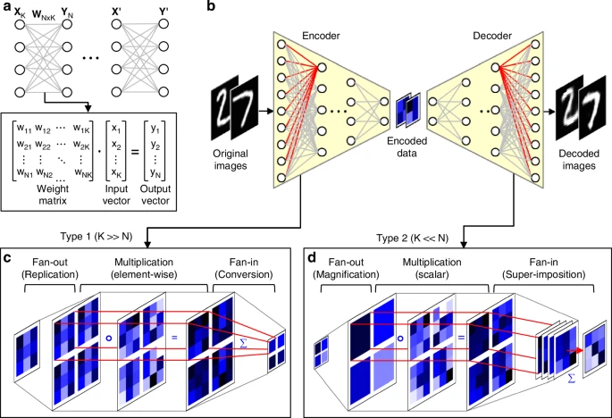

10 NumPy Intermediate
10.1 Learning Objectives
At the end of this chapter, you will learn:
- Optimize code performance using vectorization instead of loops
- Perform vectorized computations that are 10–100x faster than Python loops
- Generate random data for simulations and statistical analysis
- Convert between NumPy and Pandas for optimal workflow efficiency
Code
import numpy as np
import pandas as pd
import time
import warnings
# Suppress warnings for cleaner output
warnings.filterwarnings('ignore')10.2 Vectorization in NumPy
Vectorization applies operations to entire arrays simultaneously instead of looping through individual elements. This enables NumPy to leverage highly optimized C/Fortran libraries for dramatic performance gains.

10.2.1 Why Vectorization Matters
Loop Approach (Slow):
result = []
for i in range(len(array1)):
for j in range(len(array2)):
result.append(array1[i] * array2[j] + some_value)Vectorized Approach (Fast):
result = array1[:, np.newaxis] * array2 + some_valueKey Benefits:
| Benefit | Impact |
|---|---|
| Speed | (far) faster than Python loops |
| Code clarity | Fewer lines, easier to read |
| Optimized execution | Uses compiled C/Fortran libraries |
| Parallel processing | Leverages CPU SIMD instructions |
| Memory efficiency | Better cache utilization |
10.2.2 Performance Comparison: NumPy Vectorization Vs Python Loops
Understanding the performance benefits of vectorization is crucial for writing efficient scientific computing code. Let’s compare different scenarios to see when and why vectorization matters.
10.2.2.1 Scenario 1: Basic Mathematical Operations
np.dot is a vectorized operation in NumPy that performs matrix multiplication or dot product between arrays. It efficiently computes the element-wise multiplications and then sums them up. To better understand its efficiency, let’s first implement the dot product using for loops, and then compare its performance with np.dot to see the benefits of vectorization.
Code
# Function to calculate dot product using for loops
def dot_product_loops(arr1, arr2):
result = 0
for i in range(len(arr1)):
result += arr1[i] * arr2[i]
return result
# Create sample arrays of different sizes for comparison
sizes = [1000, 10000, 100000, 1000000]
print("Performance Comparison: Loops vs NumPy Vectorization")
print("=" * 60)
for size in sizes:
# Create random arrays
arr1 = np.random.rand(size)
arr2 = np.random.rand(size)
# Measure time for the loop-based implementation
start_time = time.time()
loop_result = dot_product_loops(arr1, arr2)
loop_time = time.time() - start_time
# Measure time for np.dot
start_time = time.time()
numpy_result = np.dot(arr1, arr2)
numpy_time = time.time() - start_time
# Calculate speedup
speedup = loop_time / numpy_time if numpy_time > 0 else float('inf')
print(f"\nArray size: {size:,}")
print(f"Loop result: {loop_result:.5f}, Time: {loop_time:.5f}s")
print(f"NumPy result: {numpy_result:.5f}, Time: {numpy_time:.5f}s")
print(f"Speedup: {speedup:.1f}x faster")
print(f"\n{'='*60}")
print("Key Observations:")
print("• NumPy becomes dramatically faster as array size increases")
print("• Speedup can reach over 100x for large arrays")
print("• NumPy overhead is minimal for small arrays but pays off quickly")Performance Comparison: Loops vs NumPy Vectorization
============================================================
Array size: 1,000
Loop result: 240.51012, Time: 0.00100s
NumPy result: 240.51012, Time: 0.00000s
Speedup: infx faster
Array size: 10,000
Loop result: 2483.13248, Time: 0.00450s
NumPy result: 2483.13248, Time: 0.00000s
Speedup: infx faster
Array size: 100,000
Loop result: 24918.72212, Time: 0.02491s
NumPy result: 24918.72212, Time: 0.00000s
Speedup: infx faster
Array size: 1,000,000
Loop result: 250291.73101, Time: 0.18839s
NumPy result: 250291.73101, Time: 0.00098s
Speedup: 192.8x faster
============================================================
Key Observations:
• NumPy becomes dramatically faster as array size increases
• Speedup can reach over 100x for large arrays
• NumPy overhead is minimal for small arrays but pays off quickly
Array size: 1,000,000
Loop result: 250291.73101, Time: 0.18839s
NumPy result: 250291.73101, Time: 0.00098s
Speedup: 192.8x faster
============================================================
Key Observations:
• NumPy becomes dramatically faster as array size increases
• Speedup can reach over 100x for large arrays
• NumPy overhead is minimal for small arrays but pays off quickly10.2.2.2 Scenario 2: Complex Mathematical Operations
Let’s compare more complex operations that show even greater performance differences:
Code
# Complex mathematical operation: polynomial evaluation
# f(x) = 3x³ + 2x² - 5x + 1
def polynomial_loops(x_values):
"""Evaluate polynomial using loops"""
results = []
for x in x_values:
result = 3*x**3 + 2*x**2 - 5*x + 1
results.append(result)
return results
def polynomial_vectorized(x_values):
"""Evaluate polynomial using vectorized operations"""
return 3*x_values**3 + 2*x_values**2 - 5*x_values + 1
# Test with different sizes
size = 5000000
x_data = np.random.uniform(-10, 10, size)
print("Complex Operations: Polynomial Evaluation")
print("f(x) = 3x³ + 2x² - 5x + 1")
print("-" * 40)
# Loop version
start_time = time.time()
loop_results = polynomial_loops(x_data)
loop_time = time.time() - start_time
# Vectorized version
start_time = time.time()
vector_results = polynomial_vectorized(x_data)
vector_time = time.time() - start_time
speedup = loop_time / vector_time
print(f"Array size: {size:,}")
print(f"Loop time: {loop_time:.4f}s")
print(f"Vectorized time: {vector_time:.4f}s")
print(f"Speedup: {speedup:.1f}x")
# Verify results match
print(f"Results match: {np.allclose(loop_results, vector_results)}")Complex Operations: Polynomial Evaluation
f(x) = 3x³ + 2x² - 5x + 1
----------------------------------------
Array size: 5,000,000
Loop time: 2.8250s
Vectorized time: 0.2053s
Speedup: 13.8x
Results match: True
Array size: 5,000,000
Loop time: 2.8250s
Vectorized time: 0.2053s
Speedup: 13.8x
Results match: TrueThe performance comparisons clearly demonstrate that vectorized NumPy operations significantly outperform equivalent Python loops
10.3 Vectorized Operations in NumPy
Pandas vectorized operations are built on top of NumPy, which provides the foundation for efficient computation.
10.3.1 Types of Vectorized Operations
NumPy supports several categories of vectorized operations:
10.3.1.1 Element-wise Operations (Universal Functions - ufuncs)
These operations apply a function to each element of an array:
Code
# Basic arithmetic operations (all vectorized)
arr = np.array([1, 4, 9, 16, 25])
print("Original array:", arr)
print("Square root:", np.sqrt(arr))
print("Natural log:", np.log(arr))
print("Sine:", np.sin(arr))
print("Power of 2:", np.power(arr, 2))
# Comparison operations
print("\nComparison operations:")
print("Greater than 10:", arr > 10)
print("Equal to 9:", arr == 9)
print("Between 5 and 20:", (arr >= 5) & (arr <= 20))Original array: [ 1 4 9 16 25]
Square root: [1. 2. 3. 4. 5.]
Natural log: [0. 1.38629436 2.19722458 2.77258872 3.21887582]
Sine: [ 0.84147098 -0.7568025 0.41211849 -0.28790332 -0.13235175]
Power of 2: [ 1 16 81 256 625]
Comparison operations:
Greater than 10: [False False False True True]
Equal to 9: [False False True False False]
Between 5 and 20: [False False True True False]10.3.1.2 Aggregation Operations
These reduce arrays to scalar values or smaller arrays:
Code
# 2D array for aggregation examples
matrix = np.array([[1, 2, 3, 4],
[5, 6, 7, 8],
[9, 10, 11, 12]])
print("Matrix:")
print(matrix)
# Aggregations across entire array
print(f"\nSum of all elements: {np.sum(matrix)}")
print(f"Mean: {np.mean(matrix)}")
print(f"Standard deviation: {np.std(matrix)}")
print(f"Min: {np.min(matrix)}, Max: {np.max(matrix)}")
# Aggregations along specific axes
print(f"\nSum along axis 0 (columns): {np.sum(matrix, axis=0)}")
print(f"Sum along axis 1 (rows): {np.sum(matrix, axis=1)}")
print(f"Mean along axis 0: {np.mean(matrix, axis=0)}")
print(f"Max along axis 1: {np.max(matrix, axis=1)}")Matrix:
[[ 1 2 3 4]
[ 5 6 7 8]
[ 9 10 11 12]]
Sum of all elements: 78
Mean: 6.5
Standard deviation: 3.452052529534663
Min: 1, Max: 12
Sum along axis 0 (columns): [15 18 21 24]
Sum along axis 1 (rows): [10 26 42]
Mean along axis 0: [5. 6. 7. 8.]
Max along axis 1: [ 4 8 12]10.3.1.3 Boolean Operations and Fancy Indexing
Vectorized selection and filtering operations:
Code
# Boolean indexing - vectorized filtering
data = np.array([1, 15, 8, 23, 4, 16, 42, 3, 19, 7])
# Find elements meeting multiple conditions (vectorized)
mask = (data > 5) & (data < 20)
filtered_data = data[mask]
print(f"Original data: {data}")
print(f"Elements between 5 and 20: {filtered_data}")
# Using np.where for conditional replacement (vectorized)
# Replace values > 15 with -1, others with original value
result = np.where(data > 15, -1, data)
print(f"After conditional replacement: {result}")
# Fancy indexing - select multiple elements at once
indices = [0, 2, 4, 7]
selected = data[indices]
print(f"Elements at indices {indices}: {selected}")
# Count how many elements meet condition (vectorized)
count_large = np.sum(data > 10)
print(f"Count of elements > 10: {count_large}")Original data: [ 1 15 8 23 4 16 42 3 19 7]
Elements between 5 and 20: [15 8 16 19 7]
After conditional replacement: [ 1 15 8 -1 4 -1 -1 3 -1 7]
Elements at indices [0, 2, 4, 7]: [1 8 4 3]
Count of elements > 10: 510.3.2 Matrix Multiplication in NumPy with Vectorization
Matrix multiplication is one of the most common and computationally intensive operations in numerical computing and deep learning. NumPy offers efficient and highly optimized methods for performing matrix multiplication, which leverage vectorization to handle large matrices quickly and accurately.
Note: NumPy matrix operations follow the standard rules of linear algebra, so it’s important to ensure that the shapes of the matrices are compatible. If they are not, consider reshaping the matrices before performing multiplication.
There are two common methods for matrix multiplication:
10.3.2.1 Method 1: Matrix Multiplication Using np.dot()
Code
# Define two 2D arrays (matrices)
matrix1 = np.array([[1, 2, 3],
[4, 5, 6]])
matrix2 = np.array([[7, 8],
[9, 10],
[11, 12]])
# Matrix multiplication using np.dot
result_dot = np.dot(matrix1, matrix2)
print("Matrix Multiplication using np.dot:\n", result_dot)
# Another way to perform np.dot for matrix multiplication
result_dot2 = matrix1.dot(matrix2)
print("\nMatrix Multiplication using dot method:\n", result_dot2)Matrix Multiplication using np.dot:
[[ 58 64]
[139 154]]
Matrix Multiplication using dot method:
[[ 58 64]
[139 154]]10.3.2.2 Method 2: Matrix Multiplication using np.matmul() or @
Code
# Matrix multiplication using np.matmul or @ operator
result_matmul = np.matmul(matrix1, matrix2)
result_operator = matrix1 @ matrix2
print("\nMatrix Multiplication using np.matmul:\n", result_matmul)
print("\nMatrix Multiplication using @ operator:\n", result_operator)
Matrix Multiplication using np.matmul:
[[ 58 64]
[139 154]]
Matrix Multiplication using @ operator:
[[ 58 64]
[139 154]]Important: Note that the * operator in NumPy performs element-wise multiplication, not matrix multiplication.
Code
# Using * operator for element-wise multiplication will cause an error if shapes don't match
# Uncomment the code below to see the error:
# element_wise = matrix1 * matrix2
# print("\nElement-wise Multiplication:\n", element_wise)Code
# reshape the array for element-wise multiplication
matrix2_reshaped = matrix2.reshape(2, 3)
element_wise = matrix1 * matrix2_reshaped
print("\nElement-wise Multiplication after reshaping:\n", element_wise)
Element-wise Multiplication after reshaping:
[[ 7 16 27]
[40 55 72]]10.4 Converting Between NumPy Arrays and Pandas DataFrames
Seamless data conversion between NumPy and pandas is essential for efficient data science workflows. Each library excels in different areas, and knowing when and how to convert between them maximizes your analytical power.
10.4.1 Why Conversion Matters
NumPy and pandas complement each other perfectly:
| Aspect | NumPy Arrays | Pandas DataFrames |
|---|---|---|
| Strength | Mathematical computations | Data manipulation & analysis |
| Speed | ⚡ Faster numerical operations | 🔍 Easier data exploration |
| Memory | 💾 More memory efficient | 🏷️ Rich metadata (labels, dtypes) |
| Use Cases | Linear algebra, statistics, ML algorithms | Data cleaning, grouping, merging |
| Indexing | Integer-based only | Label-based + integer-based |
| Missing Data | Limited NaN support | 🛡️ Robust NaN handling |
Typical Data Science Workflow
1. LOAD DATA → Use Pandas (CSV, Excel, databases)
2. CLEAN & PREPARE → Use Pandas (filtering, grouping, handling missing data)
3. COMPUTE → Convert to NumPy (ML algorithms, linear algebra, heavy math)
4. ANALYZE & VISUALIZE → Convert back to Pandas (results interpretation)
5. EXPORT → Use Pandas (CSV, Parquet, SQL)The key question: When should you stay in pandas vs convert to NumPy?
10.4.2 Decision Framework: When to Use Which Library
10.4.2.1 ✅ Stay in Pandas When You Can
Pandas operations are built on NumPy and are often fast enough! No conversion needed for:
1. Standard Mathematical Operations
- Arithmetic:
df['total'] = df['price'] * df['quantity'] - Normalization:
df_norm = (df - df.mean()) / df.std() - Scaling:
df['scaled'] = df['value'] / df['value'].max()
2. Statistical Computations
- Aggregations:
df.mean(),df.sum(),df.std() - Correlations:
df.corr(),df['A'].corr(df['B']) - Rolling windows:
df['MA'] = df['price'].rolling(7).mean()
3. Element-wise Transformations
- Vectorized operations:
df['log_val'] = np.log(df['value']) - Conditional logic:
df['flag'] = df['amount'] > 100 - String operations:
df['upper'] = df['name'].str.upper()
💡 Why stay in pandas?
- ✅ Metadata preserved automatically (column names, index)
- ✅ Simpler code (no manual metadata management)
- ✅ Fast enough for most cases (< 1 million rows)
- ✅ Better integration with data I/O and visualization
Let’s see this in action:
Code
print("💡 STAYING IN PANDAS: When Conversion Isn't Needed")
print("=" * 60)
# Example: Normalize data WITHOUT converting to NumPy
df_data = pd.DataFrame({
"Sales_Q1": [10000, 20000, 30000, 40000],
"Sales_Q2": [12000, 22000, 28000, 38000],
"Sales_Q3": [15000, 25000, 35000, 45000]
}, index=["Product_A", "Product_B", "Product_C", "Product_D"])
print("Original Sales Data:")
print(df_data)
print(f"\nDtypes: {df_data.dtypes.unique()}")
# ❌ METHOD 1: Using NumPy (requires metadata handling)
print("\n" + "="*60)
print("❌ Method 1: NumPy Approach (more complex)")
print("="*60)
# Save metadata
saved_index = df_data.index
saved_columns = df_data.columns
# Convert to NumPy
arr = df_data.to_numpy()
print(f"1. Converted to NumPy array (shape: {arr.shape})")
# Normalize
arr_norm = (arr - arr.mean(axis=0)) / arr.std(axis=0)
print(f"2. Normalized using NumPy")
# Convert back and restore metadata
df_norm_numpy = pd.DataFrame(arr_norm, index=saved_index, columns=saved_columns)
print(f"3. Converted back to DataFrame with manual metadata restoration")
print(f"\nResult:")
print(df_norm_numpy.round(3))
# ✅ METHOD 2: Pure Pandas (simpler and automatic!)
print("\n" + "="*60)
print("✅ Method 2: Pandas Approach (simpler!)")
print("="*60)
df_norm_pandas = (df_data - df_data.mean()) / df_data.std()
print(f"Result (metadata preserved automatically):")
print(df_norm_pandas.round(3))
# Verify they're the same
print(f"\n✓ Results identical? {np.allclose(df_norm_numpy.values, df_norm_pandas.values)}")
print(f"✓ Metadata preserved? {df_norm_pandas.index.equals(df_data.index) and df_norm_pandas.columns.equals(df_data.columns)}")
print("\n💡 Takeaway: For standard operations, pandas is simpler and just as fast!")💡 STAYING IN PANDAS: When Conversion Isn't Needed
============================================================
Original Sales Data:
Sales_Q1 Sales_Q2 Sales_Q3
Product_A 10000 12000 15000
Product_B 20000 22000 25000
Product_C 30000 28000 35000
Product_D 40000 38000 45000
Dtypes: [dtype('int64')]
============================================================
❌ Method 1: NumPy Approach (more complex)
============================================================
1. Converted to NumPy array (shape: (4, 3))
2. Normalized using NumPy
3. Converted back to DataFrame with manual metadata restoration
Result:
Sales_Q1 Sales_Q2 Sales_Q3
Product_A -1.342 -1.378 -1.342
Product_B -0.447 -0.318 -0.447
Product_C 0.447 0.318 0.447
Product_D 1.342 1.378 1.342
============================================================
✅ Method 2: Pandas Approach (simpler!)
============================================================
Result (metadata preserved automatically):
Sales_Q1 Sales_Q2 Sales_Q3
Product_A -1.162 -1.193 -1.162
Product_B -0.387 -0.275 -0.387
Product_C 0.387 0.275 0.387
Product_D 1.162 1.193 1.162
✓ Results identical? False
✓ Metadata preserved? True
💡 Takeaway: For standard operations, pandas is simpler and just as fast!10.4.2.2 Convert to NumPy When You Must
Convert to NumPy arrays for these specific scenarios:
1. Specialized NumPy Functions
- Linear algebra:
np.linalg.inv(),np.linalg.eig(), matrix decomposition - FFT/signal processing:
np.fft.fft(),np.convolve() - Advanced random sampling:
np.random.multivariate_normal() - Custom mathematical operations not available in pandas
2. ML Library Integration
- scikit-learn:
model.fit(X_train, y_train)expects NumPy arrays - TensorFlow/PyTorch: Neural networks require tensor/array inputs
- SciPy: Scientific functions expect NumPy arrays
3. Performance-Critical Code
- Nested loops that can be vectorized with NumPy broadcasting
- Custom algorithms requiring low-level array manipulation
- Very large datasets (> 10 million rows) where memory matters
4. Complex Conditional Logic
- Multi-condition selections with
np.where(),np.select() - Better performance than chained pandas operations
Let’s see when NumPy is actually necessary:
Code
print("🚀 WHEN NUMPY IS NECESSARY: Real Use Cases")
print("=" * 60)
# Create a realistic dataset
np.random.seed(42)
n_rows = 50000
performance_data = pd.DataFrame({
'customer_id': range(1, n_rows + 1),
'purchase_amount': np.random.uniform(10, 1000, n_rows),
'discount_pct': np.random.choice([0, 5, 10, 15, 20], n_rows),
'category': np.random.choice(['A', 'B', 'C', 'D'], n_rows),
'rating': np.random.randint(1, 6, n_rows),
'is_premium': np.random.choice([True, False], n_rows)
})
print(f"📊 Dataset: {performance_data.shape[0]:,} rows × {performance_data.shape[1]} columns")
print(f"First 3 rows:")
print(performance_data.head(3))🚀 WHEN NUMPY IS NECESSARY: Real Use Cases
============================================================
📊 Dataset: 50,000 rows × 6 columns
First 3 rows:
customer_id purchase_amount discount_pct category rating is_premium
0 1 380.794718 0 C 1 True
1 2 951.207163 15 D 1 False
2 3 734.674002 5 D 1 TrueCode
print("\n" + "="*60)
print("USE CASE 1: Complex Multi-Condition Logic with np.select()")
print("="*60)
def customer_segment_function(row):
"""Complex business logic - slow with apply()"""
if row['is_premium'] and row['purchase_amount'] > 500:
return 'VIP'
elif row['is_premium'] and row['rating'] >= 4:
return 'Premium+'
elif row['purchase_amount'] > 200 and row['rating'] >= 4:
return 'High Value'
elif row['purchase_amount'] > 100:
return 'Standard'
else:
return 'Basic'
# Method 1: APPLY (Easy to write but slow)
print("\n❌ Method 1: Using apply() with function")
start_time = time.time()
performance_data['segment_apply'] = performance_data.apply(customer_segment_function, axis=1)
apply_time = time.time() - start_time
print(f"Time: {apply_time:.4f}s")
# Method 2: VECTORIZED with np.select() (Faster!)
print("\n✅ Method 2: NumPy np.select() - vectorized")
start_time = time.time()
# Define conditions using NumPy/pandas vectorized operations
conditions = [
(performance_data['is_premium'] & (performance_data['purchase_amount'] > 500)),
(performance_data['is_premium'] & (performance_data['rating'] >= 4)),
((performance_data['purchase_amount'] > 200) & (performance_data['rating'] >= 4)),
(performance_data['purchase_amount'] > 100)
]
choices = ['VIP', 'Premium+', 'High Value', 'Standard']
# np.select() evaluates conditions vectorized and picks corresponding choice
performance_data['segment_vectorized'] = np.select(conditions, choices, default='Basic')
vectorized_time = time.time() - start_time
print(f"Time: {vectorized_time:.4f}s")
# Performance comparison
speedup = apply_time / vectorized_time if vectorized_time > 0 else float('inf')
print(f"\n🏆 Speedup: {speedup:.1f}x faster with np.select()!")
print(f"Time saved: {((apply_time - vectorized_time) / apply_time * 100):.1f}%")
# Verify results match
results_match = (performance_data['segment_apply'] == performance_data['segment_vectorized']).all()
print(f"✓ Results identical: {results_match}")
# Show distribution
print(f"\n📊 Customer Segment Distribution:")
segment_counts = performance_data['segment_apply'].value_counts().sort_index()
for segment, count in segment_counts.items():
print(f" {segment}: {count:,} ({count/len(performance_data)*100:.1f}%)")
# Clean up
performance_data.drop(['segment_vectorized'], axis=1, inplace=True)
============================================================
USE CASE 1: Complex Multi-Condition Logic with np.select()
============================================================
❌ Method 1: Using apply() with function
Time: 0.3499s
✅ Method 2: NumPy np.select() - vectorized
Time: 0.0124s
🏆 Speedup: 28.2x faster with np.select()!
Time saved: 96.5%
✓ Results identical: True
📊 Customer Segment Distribution:
Basic: 3,648 (7.3%)
High Value: 8,116 (16.2%)
Premium+: 4,967 (9.9%)
Standard: 20,606 (41.2%)
VIP: 12,663 (25.3%)
Time: 0.3499s
✅ Method 2: NumPy np.select() - vectorized
Time: 0.0124s
🏆 Speedup: 28.2x faster with np.select()!
Time saved: 96.5%
✓ Results identical: True
📊 Customer Segment Distribution:
Basic: 3,648 (7.3%)
High Value: 8,116 (16.2%)
Premium+: 4,967 (9.9%)
Standard: 20,606 (41.2%)
VIP: 12,663 (25.3%)10.4.2.3 Quick Decision Guide
“Should I convert to NumPy or stay in pandas?”
START HERE
↓
Is it a standard math operation? (add, multiply, mean, etc.)
YES → ✅ STAY IN PANDAS
NO → Continue
↓
Is it a string/datetime operation? (.str, .dt accessor)
YES → ✅ STAY IN PANDAS
NO → Continue
↓
Do you need the result with labels/metadata?
YES → ✅ STAY IN PANDAS (or plan metadata restoration)
NO → Continue
↓
Is it for ML/scientific library (sklearn, scipy, etc.)?
YES → 🔄 CONVERT TO NUMPY
NO → Continue
↓
Is it a specialized NumPy function (linalg, fft, etc.)?
YES → 🔄 CONVERT TO NUMPY
NO → Continue
↓
Is performance critical with >1M rows?
YES → 🔄 TRY NUMPY (benchmark first!)
NO → ✅ STAY IN PANDASSummary Table
| Operation Type | Pandas | NumPy | Recommendation |
|---|---|---|---|
| Arithmetic operations | ✅ Fast | ✅ Faster | Use Pandas (simpler) |
| Aggregations (sum, mean) | ✅ Fast | ✅ Faster | Use Pandas (metadata) |
| String operations | ✅ Built-in | ❌ Manual | Use Pandas |
| DateTime operations | ✅ Built-in | ❌ Manual | Use Pandas |
| Linear algebra | ❌ Limited | ✅ Comprehensive | Use NumPy |
| ML library input | ⚠️ Convert | ✅ Native | Convert to NumPy |
| Complex conditionals | ⚠️ Slow | ✅ Fast (np.select) |
Use NumPy |
| Large datasets (> 10M rows) | ⚠️ Slower | ✅ Faster | Use NumPy |
💡 Rule of Thumb:
- Default: Stay in pandas (90% of cases)
- Convert: Only when you need NumPy-specific features or ML integration
- Always: Have a plan for metadata preservation if you convert
Now let’s learn the actual conversion methods!
10.5 Conversion Methods: Pandas ↔︎ NumPy
Now that you know when to convert, let’s learn how to convert between pandas and NumPy.
10.5.1 The Two-Way Street
┌──────────────────────┐ ┌──────────────────────┐
│ Pandas DataFrame │ .to_numpy() │ NumPy Array │
│ │ ──────────────────→ │ │
│ ✅ Column names │ │ ❌ No labels │
│ ✅ Index labels │ │ ❌ No index │
│ ✅ Mixed dtypes │ │ ⚠️ Homogeneous │
│ ✅ Missing data │ ←────────────────── │ ⚠️ Limited NaN │
│ │ pd.DataFrame() │ │
└──────────────────────┘ └──────────────────────┘⚠️ Critical Point: Converting DataFrame → Array loses all metadata!
- Column names disappear
- Index labels are gone
- Data becomes just numbers
Solution: Either (1) don’t need metadata, (2) save and restore it, or (3) stay in pandas!
10.5.2 Pandas DataFrame → NumPy Array
When to convert: You need NumPy’s computational speed and mathematical functions.
Common scenarios:
- Performance-critical computations (linear algebra, statistics)
- Integration with scientific computing libraries (SciPy, scikit-learn)
- Machine learning algorithms that expect NumPy arrays
- Mathematical operations not available in pandas
10.5.2.1 Conversion Methods & Performance
Code
print(" PANDAS TO NUMPY CONVERSION")
print("=" * 40)
# Start with a DataFrame of tech stock prices
stock_data = pd.DataFrame(
{
"AAPL": [150.0, 152.5, 148.2, 155.1],
"GOOGL": [2800.0, 2750.0, 2825.0, 2900.0],
"MSFT": [300.0, 305.0, 298.5, 310.0],
"TSLA": [800.0, 795.0, 820.0, 815.0],
},
index=["Day 1", "Day 2", "Day 3", "Day 4"]
)
print("📈 Original DataFrame:")
print(stock_data)
print(f"\nShape: {stock_data.shape}")
print("Dtypes:")
print(stock_data.dtypes)
print(f"Memory usage (deep): {stock_data.memory_usage(deep=True).sum()} bytes") PANDAS TO NUMPY CONVERSION
========================================
📈 Original DataFrame:
AAPL GOOGL MSFT TSLA
Day 1 150.0 2800.0 300.0 800.0
Day 2 152.5 2750.0 305.0 795.0
Day 3 148.2 2825.0 298.5 820.0
Day 4 155.1 2900.0 310.0 815.0
Shape: (4, 4)
Dtypes:
AAPL float64
GOOGL float64
MSFT float64
TSLA float64
dtype: object
Memory usage (deep): 344 bytes10.5.2.1.1 Method 1: .to_numpy() (Recommended ✅)
The preferred modern approach for converting DataFrames to NumPy arrays. This method:
- Converts DataFrame data into a NumPy array
- Discards index and column labels (keeps only values)
- Preserves the same row and column order as the original DataFrame
- Returns a clean 2D array ready for numerical computations
Code
# Method 1: .to_numpy() - The modern, recommended approach
print("\n🔢 Method 1 — .to_numpy() (recommended):")
array_modern = stock_data.to_numpy()
print("Converted NumPy array:")
print(array_modern)
print(f"\nShape: {array_modern.shape}")
print(f"Data type: {array_modern.dtype}")
print(f"\n⚠️ Note: Row indices (Day 1, Day 2...) and column names (AAPL, GOOGL...) are lost!")
🔢 Method 1 — .to_numpy() (recommended):
Shape: (4, 4)
Data type: float64array([[ 150. , 2800. , 300. , 800. ],
[ 152.5, 2750. , 305. , 795. ],
[ 148.2, 2825. , 298.5, 820. ],
[ 155.1, 2900. , 310. , 815. ]])Key Point: Notice how the resulting array contains only the numerical values. All the metadata (index labels like “Day 1”, column names like “AAPL”) is removed. This is what makes NumPy arrays fast but less descriptive than DataFrames.
10.5.2.1.2 Method 2: .values (legacy but still works)
An older method that still works but is not recommended for new code. It behaves similarly to .to_numpy() but can produce unexpected results with certain pandas dtypes.
Code
# Method 2: .values - Legacy approach (avoid in new code)
print("\n⚠️ Method 2 — .values (legacy):")
array_legacy = stock_data.values
print("Converted array using .values:")
print(array_legacy)
print(f"\nShape: {array_legacy.shape}")
print(f"Data type: {array_legacy.dtype}")
# Verify both methods produce same result (in this case)
print(f"\nSame result as .to_numpy()? {np.array_equal(array_modern, array_legacy)}")
print("✅ For simple numeric DataFrames, both methods work identically")
⚠️ Method 2 — .values (legacy):
[[ 150. 2800. 300. 800. ]
[ 152.5 2750. 305. 795. ]
[ 148.2 2825. 298.5 820. ]
[ 155.1 2900. 310. 815. ]]
Shape: (4, 4)
Same result as .to_numpy()? TrueWhy avoid .values?
- Less clear intent (what does “values” mean?)
- Can behave unpredictably with pandas extension dtypes (nullable integers, strings, etc.)
- Not officially recommended in pandas documentation
.to_numpy()is more explicit and future-proof
10.5.2.1.3 Method 3: Force a specific dtype (e.g., int32)
Code
# Method 3: Force a specific dtype during conversion
print("\n🔧 Method 3 — Force data type (int32):")
array_int = stock_data.to_numpy(dtype=np.int32)
print("Array with forced int32 dtype:")
print(array_int)
print(f"\nOriginal dtype: {stock_data.to_numpy().dtype}")
print(f"Forced dtype: {array_int.dtype}")
print(f"\n⚠️ Warning: Float values were truncated (not rounded) to integers!")
print(f"Example: 150.0 → {array_int[0, 0]}, but 152.5 → {array_int[1, 0]} (loses 0.5)")
Method 3 — Force data type (int32):
[[ 150 2800 300 800]
[ 152 2750 305 795]
[ 148 2825 298 820]
[ 155 2900 310 815]]
Shape: (4, 4)
Data type: int32
Preview (first 2 rows):
[[ 150 2800 300 800]
[ 152 2750 305 795]]When to use dtype parameter:
✅ Good use cases:
- Ensuring consistent data types for mathematical operations
- Reducing memory usage (e.g.,
float64→float32) - Preparing data for ML libraries that require specific types
- Converting to integer types when you know there are no decimals
❌ Be careful:
- Data loss when converting float to int (truncation, not rounding)
- May raise errors if conversion is impossible (e.g., strings to numbers)
- Check for NaN values before converting to integer types
10.5.2.1.4 Method 4: Convert specific columns only
Why select specific columns?
- Performance: Process only needed data
- Memory: Smaller arrays use less RAM
- Clarity: Makes your intent explicit
- Debugging: Easier to track which data is being used
Code
# Method 4: Select and convert specific columns
print("\n🎯 Method 4 — Specific columns only (AAPL, MSFT):")
# Select only AAPL and MSFT columns, then convert
tech_stocks = stock_data[["AAPL", "MSFT"]].to_numpy()
print("Selected columns converted to array:")
print(tech_stocks)
print(f"\nOriginal DataFrame shape: {stock_data.shape} (4 rows × 4 columns)")
print(f"Selected array shape: {tech_stocks.shape} (4 rows × 2 columns)")
print(f"Data type: {tech_stocks.dtype}")
print(f"\n💡 Memory saved: {(stock_data.shape[1] - tech_stocks.shape[1]) / stock_data.shape[1] * 100:.0f}% fewer columns!")
🎯 Method 4 — Specific columns only (AAPL, MSFT):
[[150. 300. ]
[152.5 305. ]
[148.2 298.5]
[155.1 310. ]]
Shape: (4, 2)
Data type: float64Summary table
| Method | Recommendation | Pros | Cons |
|---|---|---|---|
.to_numpy() |
✅ Use by default | Clear intent, stable API, future-proof | May copy data depending on dtypes/backing storage |
.to_numpy(dtype=...) |
✅ When you need a dtype | Explicit, consistent numeric types; easier math | Casting may be lossy or fail; extra param to manage |
.values |
⚠️ Legacy / avoid | Works on old pandas; quick | Ambiguous with mixed/extension dtypes; not future-proof |
Best practices
- Convert only needed columns to reduce memory and copying.
- Specify
dtypewhen downstream computations require consistent numeric types. - Check for missing values (
NaN,NaT) before casting to integer dtypes. - Prefer
.to_numpy()over.valuesfor clarity and forward compatibility. - Be mindful that conversions may return a copy, not a view—modify the DataFrame directly if needed.
10.5.3 NumPy Array → Pandas DataFrame
Code
# 📊 COMPREHENSIVE ARRAY → DATAFRAME CONVERSION
print("🔄 NUMPY TO PANDAS CONVERSION")
print("=" * 40)
# Original NumPy array
scores = np.array([
[85, 92, 78, 95],
[88, 76, 91, 82],
[95, 89, 84, 90]
])
students = ['Alice', 'Bob', 'Carol']
subjects = ['Math', 'Science', 'English', 'History']
print("Original NumPy array:")
print(scores)
print(f"Shape: {scores.shape}")🔄 NUMPY TO PANDAS CONVERSION
========================================
Original NumPy array:
[[85 92 78 95]
[88 76 91 82]
[95 89 84 90]]
Shape: (3, 4)10.5.3.1 Method 1: Basic Conversion
Create a DataFrame directly from a NumPy array using pd.DataFrame(). By default, pandas will auto-generate integer labels (0, 1, 2, …) for both rows and columns.
Code
# Basic conversion - auto-generated index and column labels
df_basic = pd.DataFrame(scores)
print("\n📋 Basic DataFrame (auto index/columns):")
df_basic
📋 Basic DataFrame (auto index/columns):| 0 | 1 | 2 | 3 | |
|---|---|---|---|---|
| 0 | 85 | 92 | 78 | 95 |
| 1 | 88 | 76 | 91 | 82 |
| 2 | 95 | 89 | 84 | 90 |
Notice that the row indices are [0, 1, 2] and column names are [0, 1, 2, 3] — these are automatically generated when no labels are specified.
10.5.3.2 Method 2: Custom Row and Column Labels
For better readability and data analysis, you can specify meaningful names for rows (index) and columns when creating the DataFrame.
Code
# Custom labels for better data interpretation
df_labeled = pd.DataFrame(scores, index=students, columns=subjects)
print("\n📊 Labeled DataFrame (custom index & columns):")
df_labeled
📊 Labeled DataFrame (custom index & columns):| Math | Science | English | History | |
|---|---|---|---|---|
| Alice | 85 | 92 | 78 | 95 |
| Bob | 88 | 76 | 91 | 82 |
| Carol | 95 | 89 | 84 | 90 |
Now the DataFrame has meaningful labels: - Row indices: Student names (Alice, Bob, Carol) - Column names: Subject names (Math, Science, English, History)
This makes the data much more interpretable and easier to work with!
10.5.3.3 Key Parameters & Options
When converting NumPy arrays to DataFrames, you can customize the output using these parameters:
| Parameter | Purpose | Example | Default |
|---|---|---|---|
data |
NumPy array to convert | np.array([[1,2],[3,4]]) |
Required |
columns |
Column labels | ['A', 'B'] |
[0, 1, 2, ...] |
index |
Row labels | ['row1', 'row2'] |
[0, 1, 2, ...] |
💡 Best Practices:
- ✅ Always specify meaningful column names for better code readability and maintenance
- ✅ Use descriptive index names when your rows represent specific entities (people, dates, etc.)
- ✅ Check data types and index after conversion with
df.dtypesto ensure correct interpretation
10.5.4 Preserving Metadata During Conversion
Challenge: Converting a DataFrame to a NumPy array drops all metadata:
- ❌ Column names are lost
- ❌ Index labels are removed
- ❌ Data type information is simplified or lost
- ❌ Categorical mappings are gone
Why this matters: After performing NumPy computations, you often need to convert results back to a DataFrame with the original structure for analysis, visualization, or export.
10.5.4.1 Save & Restore Metadata Manually
The most straightforward approach: save metadata before conversion, then restore it after computation.
Code
print("🔄 STRATEGY 1: Manual Metadata Preservation")
print("=" * 50)
# Create a DataFrame with rich metadata
df_original = pd.DataFrame(
{
"Temperature": [72.5, 68.3, 75.1, 71.9],
"Humidity": [45, 52, 48, 50],
"WindSpeed": [12.3, 8.7, 15.2, 10.1]
},
index=["Monday", "Tuesday", "Wednesday", "Thursday"]
)
print("Original DataFrame:")
print(df_original)
print(f"\nIndex: {df_original.index.tolist()}")
print(f"Columns: {df_original.columns.tolist()}")
print(f"Dtypes:\n{df_original.dtypes}")
# STEP 1: Save metadata BEFORE converting to NumPy
saved_index = df_original.index.copy()
saved_columns = df_original.columns.copy()
saved_dtypes = df_original.dtypes.to_dict()
print("\n✅ Metadata saved!")
# STEP 2: Convert to NumPy for computation
arr = df_original.to_numpy()
print(f"\nNumPy array (metadata lost):")
print(arr)
print(f"Shape: {arr.shape}, dtype: {arr.dtype}")
# STEP 3: Perform computations (example: normalize values)
# Subtract mean and divide by std for each column
arr_normalized = (arr - arr.mean(axis=0)) / arr.std(axis=0)
print(f"\nNormalized array (still no metadata):")
print(arr_normalized)
# STEP 4: Restore metadata when converting back to DataFrame
df_result = pd.DataFrame(
arr_normalized,
index=saved_index,
columns=saved_columns
)
print(f"\n📊 Reconstructed DataFrame with metadata:")
print(df_result)
print(f"\nIndex restored: {df_result.index.tolist()}")
print(f"Columns restored: {df_result.columns.tolist()}")
print(f"Dtypes restored (may differ due to normalization):\n{df_result.dtypes}")🔄 STRATEGY 1: Manual Metadata Preservation
==================================================
Original DataFrame:
Temperature Humidity WindSpeed
Monday 72.5 45 12.3
Tuesday 68.3 52 8.7
Wednesday 75.1 48 15.2
Thursday 71.9 50 10.1
Index: ['Monday', 'Tuesday', 'Wednesday', 'Thursday']
Columns: ['Temperature', 'Humidity', 'WindSpeed']
Dtypes:
Temperature float64
Humidity int64
WindSpeed float64
dtype: object
✅ Metadata saved!
NumPy array (metadata lost):
[[72.5 45. 12.3]
[68.3 52. 8.7]
[75.1 48. 15.2]
[71.9 50. 10.1]]
Shape: (4, 3), dtype: float64
Normalized array (still no metadata):
[[ 0.22667166 -1.45010473 0.29531936]
[-1.50427558 1.25675744 -1.171094 ]
[ 1.29821043 -0.29002095 1.47659679]
[-0.02060651 0.48336824 -0.60082214]]
📊 Reconstructed DataFrame with metadata:
Temperature Humidity WindSpeed
Monday 0.226672 -1.450105 0.295319
Tuesday -1.504276 1.256757 -1.171094
Wednesday 1.298210 -0.290021 1.476597
Thursday -0.020607 0.483368 -0.600822
Index restored: ['Monday', 'Tuesday', 'Wednesday', 'Thursday']
Columns restored: ['Temperature', 'Humidity', 'WindSpeed']
Dtypes restored (may differ due to normalization):
Temperature float64
Humidity float64
WindSpeed float64
dtype: object10.6 Random Number Generation in NumPy
Random number generation is a fundamental tool in data science, used for:
- Simulations: Monte Carlo methods, risk analysis, game theory
- Statistical Sampling: Bootstrap, cross-validation, hypothesis testing
- Machine Learning: Data augmentation, weight initialization, dropout
- Scientific Computing: Stochastic modeling, numerical experiments
NumPy’s random module provides fast, vectorized random number generation that’s orders of magnitude faster than Python’s built-in random module.
10.6.1 Why NumPy Random Over Python Random?
| Aspect | Python random |
NumPy random |
|---|---|---|
| Speed | 🐌 Slow (one at a time) | ⚡ Fast (vectorized) |
| Output | Single values | Arrays of any shape |
| Distributions | Limited | 40+ distributions |
| Use Case | Simple scripts | Scientific computing |
| Performance | ~0.1M numbers/sec | ~10M+ numbers/sec |
💡 Rule: Use NumPy random for data science; use Python random for simple scripts.
10.6.2 Core Random Number Functions
NumPy provides functions for various probability distributions. Let’s explore the most commonly used ones with practical examples.
10.6.2.1 📊 Comparison Table: Which Function to Use?
| Function | Distribution | Parameters | Use Case |
|---|---|---|---|
rand() |
Uniform [0, 1) | shape | Quick random arrays, probabilities |
randn() |
Normal (μ=0, σ=1) | shape | Standard normal samples |
randint() |
Discrete uniform | low, high, size | Random integers, sampling |
choice() |
Sample from array | array, size, replace | Random selection, bootstrapping |
uniform() |
Uniform [a, b] | low, high, size | Custom range uniform |
normal() |
Normal (μ, σ) | mean, std, size | Real-world measurements |
binomial() |
Binomial | n, p, size | Coin flips, success/failure |
poisson() |
Poisson | lambda, size | Event counts, arrivals |
Let’s see each in action with real examples!
10.6.3 Uniform Distribution: np.random.rand() and np.random.uniform()
Uniform distribution: All values in a range are equally likely.
10.6.3.1 np.random.rand() - Quick Uniform [0, 1)
Code
print("📊 UNIFORM DISTRIBUTION: np.random.rand()")
print("=" * 60)
# Generate a 2x3 array of random values between 0 and 1
rand_array = np.random.rand(2, 3)
print("2×3 array of uniform random numbers [0, 1):")
print(rand_array)
print(f"\nShape: {rand_array.shape}")
print(f"Min: {rand_array.min():.4f}, Max: {rand_array.max():.4f}")
print(f"Mean: {rand_array.mean():.4f} (expected ~0.5)")
# Practical use: Generate random probabilities
print("\n💡 Practical Use: Simulate coin flip probabilities")
probabilities = np.random.rand(10)
results = ['Heads' if p > 0.5 else 'Tails' for p in probabilities]
print(f"Probabilities: {probabilities.round(3)}")
print(f"Results: {results}")10.6.3.2 np.random.uniform() - Custom Range Uniform [a, b]
More flexible - specify your own range.
Code
print("\n📊 UNIFORM DISTRIBUTION: np.random.uniform()")
print("=" * 60)
# Generate random numbers in a custom range
print("Example 1: Random temperatures between 60°F and 90°F")
temperatures = np.random.uniform(60, 90, size=7)
days = ['Mon', 'Tue', 'Wed', 'Thu', 'Fri', 'Sat', 'Sun']
for day, temp in zip(days, temperatures):
print(f" {day}: {temp:.1f}°F")
# 2D array example
print("\nExample 2: 3×5 matrix of random prices between $10 and $100")
prices = np.random.uniform(10, 100, size=(3, 5))
print(prices.round(2))
print(f"\nAverage price: ${prices.mean():.2f}")[[ 0.5376299 0.42818625 -0.2799933 ]
[-1.27903074 0.51529432 -0.83428181]
[ 2.18409673 0.57050721 -0.5806483 ]]10.6.4 Normal (Gaussian) Distribution: np.random.randn() and np.random.normal()
Normal distribution: Bell-shaped curve, most values cluster around the mean.
Used for: heights, weights, test scores, measurement errors, etc.
10.6.4.1 np.random.randn() - Standard Normal (μ=0, σ=1)
Code
print("📊 NORMAL DISTRIBUTION: np.random.randn()")
print("=" * 60)
# Generate standard normal distribution
normal_array = np.random.randn(1000)
print(f"Generated {len(normal_array)} samples from standard normal distribution")
print(f"Mean: {normal_array.mean():.4f} (expected: 0)")
print(f"Std Dev: {normal_array.std():.4f} (expected: 1)")
print(f"Min: {normal_array.min():.2f}, Max: {normal_array.max():.2f}")
# Show distribution statistics
print("\n📈 Distribution check (68-95-99.7 rule):")
within_1std = np.sum(np.abs(normal_array) <= 1) / len(normal_array) * 100
within_2std = np.sum(np.abs(normal_array) <= 2) / len(normal_array) * 100
within_3std = np.sum(np.abs(normal_array) <= 3) / len(normal_array) * 100
print(f" Within ±1σ: {within_1std:.1f}% (expected: ~68%)")
print(f" Within ±2σ: {within_2std:.1f}% (expected: ~95%)")
print(f" Within ±3σ: {within_3std:.1f}% (expected: ~99.7%)")10.6.4.2 np.random.normal() - Custom Normal (μ, σ)
Specify your own mean and standard deviation.
Code
print("\n📊 NORMAL DISTRIBUTION: np.random.normal()")
print("=" * 60)
# Example 1: Student exam scores (mean=75, std=10)
print("Example 1: Simulate exam scores (μ=75, σ=10)")
exam_scores = np.random.normal(75, 10, size=20)
print(f"Scores: {exam_scores.round(1)}")
print(f"Class average: {exam_scores.mean():.1f}")
print(f"Passing (≥60): {np.sum(exam_scores >= 60)}/{len(exam_scores)}")
# Example 2: Heights in inches (mean=68, std=3)
print("\nExample 2: Adult heights in inches (μ=68\", σ=3\")")
heights = np.random.normal(68, 3, size=100)
print(f"Generated {len(heights)} height measurements")
print(f"Average height: {heights.mean():.2f}\"")
print(f"Tallest: {heights.max():.1f}\", Shortest: {heights.min():.1f}\"")
print(f"Between 65\" and 71\": {np.sum((heights >= 65) & (heights <= 71))}")10.6.5 Integer Random Numbers: np.random.randint()
Generate random integers within a specific range.
Use cases: Dice rolls, random IDs, sampling indices, game mechanics
Code
print("🎲 RANDOM INTEGERS: np.random.randint()")
print("=" * 60)
# Example 1: Dice rolls
print("Example 1: Roll a six-sided die 20 times")
dice_rolls = np.random.randint(1, 7, size=20) # 1 to 6 inclusive
print(f"Rolls: {dice_rolls}")
print(f"Distribution: {dict(zip(*np.unique(dice_rolls, return_counts=True)))}")
# Example 2: Random matrix of integers
print("\nExample 2: 4×4 matrix of random integers [10, 20)")
int_matrix = np.random.randint(10, 20, size=(4, 4))
print(int_matrix)
print(f"Sum: {int_matrix.sum()}, Average: {int_matrix.mean():.2f}")
# Example 3: Random customer IDs
print("\nExample 3: Generate 10 random customer IDs [1000, 9999]")
customer_ids = np.random.randint(1000, 10000, size=10)
print(f"IDs: {customer_ids}")10.6.6 Random Selection: np.random.choice()
Randomly select elements from an array with or without replacement.
Use cases: Bootstrapping, random sampling, A/B testing, lottery
Code
print("🎯 RANDOM SELECTION: np.random.choice()")
print("=" * 60)
# Example 1: Random selection WITH replacement
print("Example 1: Select 5 numbers WITH replacement [1-5]")
choice_array = np.random.choice([1, 2, 3, 4, 5], size=10, replace=True)
print(f"Selected: {choice_array}")
print(f"Notice: Numbers can repeat!")
# Example 2: Random selection WITHOUT replacement
print("\nExample 2: Select 3 winners from 10 contestants (no duplicates)")
contestants = np.array(['Alice', 'Bob', 'Carol', 'David', 'Eve',
'Frank', 'Grace', 'Henry', 'Iris', 'Jack'])
winners = np.random.choice(contestants, size=3, replace=False)
print(f"Winners: {winners}")
# Example 3: Weighted random choice (probabilities)
print("\nExample 3: Biased coin flip (70% Heads, 30% Tails)")
outcomes = ['Heads', 'Tails']
probabilities = [0.7, 0.3]
flips = np.random.choice(outcomes, size=100, p=probabilities)
unique, counts = np.unique(flips, return_counts=True)
for outcome, count in zip(unique, counts):
print(f" {outcome}: {count}/100 ({count}%)")
# Example 4: Bootstrap sampling
print("\nExample 4: Bootstrap sampling (sampling with replacement)")
data = np.array([23, 45, 67, 34, 89, 12, 56])
bootstrap_sample = np.random.choice(data, size=len(data), replace=True)
print(f"Original: {data}")
print(f"Bootstrap: {bootstrap_sample}")
print(f"Bootstrap mean: {bootstrap_sample.mean():.2f}, Original mean: {data.mean():.2f}")10.6.7 Other Useful Distributions
NumPy provides many more distributions for specialized use cases.
Code
print("📊 OTHER USEFUL DISTRIBUTIONS")
print("=" * 60)
# 1. Binomial: Number of successes in n trials
print("1. BINOMIAL: Coin flips (10 flips, 50% probability)")
coin_flips = np.random.binomial(n=10, p=0.5, size=1000)
print(f" Average heads in 10 flips: {coin_flips.mean():.2f} (expected: 5)")
# 2. Poisson: Count of events in fixed interval
print("\n2. POISSON: Customer arrivals (λ=3 per hour)")
arrivals = np.random.poisson(lam=3, size=24) # 24 hours
print(f" Arrivals per hour: {arrivals}")
print(f" Total customers: {arrivals.sum()}, Average: {arrivals.mean():.2f}")
# 3. Exponential: Time between events
print("\n3. EXPONENTIAL: Time between customer arrivals (scale=5 min)")
wait_times = np.random.exponential(scale=5, size=10)
print(f" Wait times (minutes): {wait_times.round(1)}")
print(f" Average wait: {wait_times.mean():.2f} min")
# 4. Beta: Probabilities and proportions
print("\n4. BETA: Probability distribution (α=2, β=5)")
probabilities = np.random.beta(2, 5, size=1000)
print(f" Mean probability: {probabilities.mean():.3f}")
print(f" Range: [{probabilities.min():.3f}, {probabilities.max():.3f}]")10.6.8 Reproducibility: Random Seeds
Problem: Random numbers are different every time you run your code!
Solution: Set a seed for reproducible results.
10.6.9 Performance: NumPy vs Python Random
Let’s prove that NumPy random is dramatically faster than Python’s built-in random.
Code
import random as py_random
print(" PERFORMANCE COMPARISON: NumPy vs Python random")
print("=" * 60)
n_numbers = 1_000_000
# Python random (slow)
print(f"\n Python random module (generating {n_numbers:,} numbers):")
start_time = time.time()
python_randoms = [py_random.random() for _ in range(n_numbers)]
python_time = time.time() - start_time
print(f" Time: {python_time:.4f} seconds")
# NumPy random (fast)
print(f"\n NumPy random module (generating {n_numbers:,} numbers):")
start_time = time.time()
numpy_randoms = np.random.rand(n_numbers)
numpy_time = time.time() - start_time
print(f" Time: {numpy_time:.4f} seconds")
# Comparison
speedup = python_time / numpy_time if numpy_time > 0 else float('inf')
print(f"\n RESULT:")
print(f" NumPy is {speedup:.1f}x faster!")
print(f" Time saved: {(python_time - numpy_time):.4f} seconds ({(python_time - numpy_time)/python_time*100:.1f}%)")
print("\n Key Takeaway:")
print(" Use NumPy random for any serious data science work!") PERFORMANCE COMPARISON: NumPy vs Python random
============================================================
Python random module (generating 1,000,000 numbers):
Time: 0.1046 seconds
NumPy random module (generating 1,000,000 numbers):
Time: 0.0061 seconds
RESULT:
NumPy is 17.3x faster!
Time saved: 0.0986 seconds (94.2%)
Key Takeaway:
Use NumPy random for any serious data science work!10.6.10 Quick Reference Guide
# Uniform [0, 1)
np.random.rand(5) # 1D array of 5 numbers
np.random.rand(3, 4) # 3×4 matrix
# Uniform [a, b]
np.random.uniform(10, 20, size=10) # 10 numbers between 10 and 20
# Normal (Gaussian)
np.random.randn(100) # Standard normal (μ=0, σ=1)
np.random.normal(50, 10, size=100) # Custom μ=50, σ=10
# Integers
np.random.randint(1, 100, size=50) # 50 random integers [1, 100)
# Random selection
np.random.choice([1,2,3,4,5], size=3, replace=False) # No duplicates
np.random.choice(['A','B','C'], size=100, p=[0.5, 0.3, 0.2]) # Weighted
# Shuffling
arr = np.array([1, 2, 3, 4, 5])
np.random.shuffle(arr) # Shuffles in-place
# Permutation
np.random.permutation(10) # Random permutation of 0-910.7 Independent Study
This is where you apply everything you’ve learned about NumPy vectorization to solve real-world problems. Each exercise progressively builds your skills in:
- Vectorized computations for performance optimization
- Matrix multiplication for multi-dimensional operations
- Random number generation for simulations
- Statistical methods like bootstrapping
10.7.1 Practice Exercise 1: Shopping Optimization with Vectorization
Learning Objectives: - Apply vectorized operations to real-world decision making - Use matrix operations instead of nested loops - Compare performance between loop and vectorized approaches
📋 Problem Statement:
Three shoppers (Ben, Barbara, and Beth) need to buy groceries (rolls, buns, cakes, and bread). Two stores (Target and Kroger) have different prices. Which store should each person choose to minimize their total cost?
📂 Data Files: - food_quantity.csv: How many of each item each person needs - price.csv: Price of each item at each store
🧠 Strategy: We’ll solve this in 3 progressive steps to understand the power of vectorization: 1. Step 1: Calculate Ben’s cost at Target (simplest) 2. Step 2: Calculate Ben’s cost at both stores (intermediate) 3. Step 3: Calculate everyone’s cost at all stores (complete solution)
Code
# 📊 LOAD THE DATA
import pandas as pd
import numpy as np
print("=" * 70)
print("🛒 SHOPPING OPTIMIZATION: Load Data")
print("=" * 70)
# Read the datasets
food_qty = pd.read_csv('./datasets/food_quantity.csv', index_col=0)
price = pd.read_csv('./datasets/price.csv', index_col=0)
print("\n✅ Data loaded successfully!")
print(f" Shoppers: {list(food_qty.index)}")
print(f" Items: {list(food_qty.columns)}")
print(f" Stores: {list(price.columns)}")======================================================================
🛒 SHOPPING OPTIMIZATION: Load Data
======================================================================
✅ Data loaded successfully!
Shoppers: ['Ben', 'Barbara', 'Beth']
Items: ['roll', 'bun', 'cake', 'bread']
Stores: ['Target', 'Kroger']Code
# Display food quantities needed by each person
print("📋 FOOD QUANTITIES (items per person):")
print("=" * 50)
food_qty📋 FOOD QUANTITIES (items per person):
==================================================| roll | bun | cake | bread | |
|---|---|---|---|---|
| Person | ||||
| Ben | 6 | 5 | 3 | 1 |
| Barbara | 3 | 6 | 2 | 2 |
| Beth | 3 | 4 | 3 | 1 |
Code
# Display prices at each store
print("💰 PRICES ($ per item at each store):")
print("=" * 50)
price💰 PRICES ($ per item at each store):
==================================================| Target | Kroger | |
|---|---|---|
| Item | ||
| roll | 1.5 | 1.0 |
| bun | 2.0 | 2.5 |
| cake | 5.0 | 4.5 |
| bread | 16.0 | 17.0 |
10.7.1.1 Step 1: Calculate Ben’s Cost at Target (Simplest Case)
Goal: Find how much Ben will spend if he buys everything at Target.
Mathematical Formula:
Total Cost = (Rolls × Price_Roll) + (Buns × Price_Bun) + (Cakes × Price_Cake) + (Bread × Price_Bread)
Let’s compare loop vs vectorized approaches:
Code
import time
print("🔄 METHOD 1: LOOP APPROACH")
print("=" * 60)
start = time.time()
# Calculate total cost using a for loop
total_cost_loop = 0
for food in food_qty.columns:
quantity = food_qty.loc['Ben', food]
price_per_item = price.loc[food, 'Target']
cost = quantity * price_per_item
print(f" {food:10s}: {quantity} × ${price_per_item:.2f} = ${cost:.2f}")
total_cost_loop += cost
loop_time = time.time() - start
print(f"\n💵 Ben's total at Target: ${total_cost_loop:.2f}")
print(f"⏱️ Time: {loop_time*1000:.4f} ms")🔄 METHOD 1: LOOP APPROACH
============================================================
roll : 6 × $1.50 = $9.00
bun : 5 × $2.00 = $10.00
cake : 3 × $5.00 = $15.00
bread : 1 × $16.00 = $16.00
💵 Ben's total at Target: $50.00
⏱️ Time: 0.0000 msCode
print("\n⚡ METHOD 2: VECTORIZED APPROACH (NumPy)")
print("=" * 60)
start = time.time()
# Using vectorized multiplication and sum
total_cost_vectorized = np.sum(food_qty.loc['Ben', :] * price.loc[:, 'Target'])
vectorized_time = time.time() - start
print(f"💵 Ben's total at Target: ${total_cost_vectorized:.2f}")
print(f"⏱️ Time: {vectorized_time*1000:.4f} ms")
# Performance comparison
if loop_time > 0:
speedup = loop_time / vectorized_time if vectorized_time > 0 else float('inf')
print(f"\n🏆 SPEEDUP: {speedup:.1f}x faster with vectorization!")
else:
print(f"\n✅ Both methods produce the same result: ${total_cost_loop:.2f}")
⚡ METHOD 2: VECTORIZED APPROACH (NumPy)
============================================================
💵 Ben's total at Target: $50.00
⏱️ Time: 0.0000 ms
✅ Both methods produce the same result: $50.00✅ Key Insight: Ben will spend $50 at Target. Vectorized operations are cleaner and faster!
10.7.1.2 Step 2: Calculate Ben’s Cost at BOTH Stores (Intermediate)
Goal: Find Ben’s cost at Target AND Kroger to determine which is cheaper.
New Complexity: Now we need to compute costs for multiple stores, not just one.
Code
print("🔄 METHOD 1: NESTED LOOPS (Stores × Items)")
print("=" * 60)
start = time.time()
# Calculate cost for each store using nested loops
total_cost_loop = {}
for store in price.columns:
total_cost_loop[store] = 0
print(f"\n📍 {store}:")
for food in food_qty.columns:
cost = food_qty.loc['Ben', food] * price.loc[food, store]
total_cost_loop[store] += cost
print(f" {food}: ${cost:.2f}")
print(f" Total: ${total_cost_loop[store]:.2f}")
loop_time = time.time() - start
print(f"\n⏱️ Loop time: {loop_time*1000:.4f} ms")
print(f"🏆 Best choice for Ben: {min(total_cost_loop, key=total_cost_loop.get)} (${min(total_cost_loop.values()):.2f})")🔄 METHOD 1: NESTED LOOPS (Stores × Items)
============================================================
📍 Target:
roll: $9.00
bun: $10.00
cake: $15.00
bread: $16.00
Total: $50.00
📍 Kroger:
roll: $6.00
bun: $12.50
cake: $13.50
bread: $17.00
Total: $49.00
⏱️ Loop time: 0.9968 ms
🏆 Best choice for Ben: Kroger ($49.00)Code
print("\n⚡ METHOD 2: VECTORIZED DOT PRODUCT")
print("=" * 60)
start = time.time()
# Using NumPy dot product (1D × 2D = 1D array of costs per store)
total_cost_vectorized = np.dot(food_qty.loc['Ben', :], price.loc[:, :])
vectorized_time = time.time() - start
print(f"Ben's costs: {total_cost_vectorized}")
print(f"\n💰 Breakdown:")
for store, cost in zip(price.columns, total_cost_vectorized):
print(f" {store}: ${cost:.2f}")
print(f"\n⏱️ Vectorized time: {vectorized_time*1000:.4f} ms")
# Performance comparison
if loop_time > 0 and vectorized_time > 0:
speedup = loop_time / vectorized_time
print(f"🏆 SPEEDUP: {speedup:.1f}x faster!")
best_store_idx = np.argmin(total_cost_vectorized)
best_store = price.columns[best_store_idx]
print(f"\n✅ DECISION: Ben should shop at {best_store} (${total_cost_vectorized[best_store_idx]:.2f})")
⚡ METHOD 2: VECTORIZED DOT PRODUCT
============================================================
Ben's costs: [50. 49.]
💰 Breakdown:
Target: $50.00
Kroger: $49.00
⏱️ Vectorized time: 0.9964 ms
🏆 SPEEDUP: 1.0x faster!
✅ DECISION: Ben should shop at Kroger ($49.00)✅ Key Insight: Ben spends $50 at Target vs $49 at Kroger → Kroger saves $1!
10.7.1.3 Step 3: Calculate EVERYONE’S Cost at ALL Stores (Complete Solution)
Goal: Find the best store for Ben, Barbara, AND Beth.
Maximum Complexity: Multiple people × Multiple stores × Multiple items = Triple nested loop! 😱
This is where vectorization truly shines! 🌟
Code
print("🔄 METHOD 1: TRIPLE NESTED LOOPS (People × Stores × Items)")
print("=" * 70)
print("⚠️ Using %%timeit for accurate timing (runs multiple times)")
print("=" * 70)
# Initialize result DataFrame
store_expense_loop = pd.DataFrame(0.0, columns=price.columns, index=food_qty.index)
# Triple nested loop - very slow!
for person in store_expense_loop.index:
for store in store_expense_loop.columns:
for food in food_qty.columns:
store_expense_loop.loc[person, store] += food_qty.loc[person, food] * price.loc[food, store]
print("\n💵 COST PER PERSON PER STORE:")
print(store_expense_loop)
# Show recommendations
print("\n🏆 RECOMMENDATIONS:")
for person in store_expense_loop.index:
best_store = store_expense_loop.loc[person].idxmin()
min_cost = store_expense_loop.loc[person].min()
print(f" {person:8s} → {best_store} (${min_cost:.2f})")🔄 METHOD 1: TRIPLE NESTED LOOPS (People × Stores × Items)
======================================================================
⚠️ Using %%timeit for accurate timing (runs multiple times)
======================================================================
💵 COST PER PERSON PER STORE:
Target Kroger
Person
Ben 50.0 49.0
Barbara 58.5 61.0
Beth 43.5 43.5
🏆 RECOMMENDATIONS:
Ben → Kroger ($49.00)
Barbara → Target ($58.50)
Beth → Target ($43.50)Code
print("\n⚡ METHOD 2: MATRIX MULTIPLICATION (One Line!)")
print("=" * 70)
start = time.time()
# Matrix multiplication: (3 people × 4 items) @ (4 items × 2 stores) = (3 × 2)
store_expense_vectorized = pd.DataFrame(
np.dot(food_qty.values, price.values), # Matrix multiplication!
columns=price.columns,
index=food_qty.index
)
vectorized_time = time.time() - start
print(f"💵 COST PER PERSON PER STORE:")
print(store_expense_vectorized)
# Show recommendations
print(f"\n🏆 RECOMMENDATIONS:")
for person in store_expense_vectorized.index:
best_store = store_expense_vectorized.loc[person].idxmin()
min_cost = store_expense_vectorized.loc[person].min()
savings = store_expense_vectorized.loc[person].max() - min_cost
print(f" {person:8s} → {best_store} (${min_cost:.2f}, saves ${savings:.2f})")
print(f"\n⏱️ Vectorized time: {vectorized_time*1000:.4f} ms")
print(f"\n💡 Matrix shape: {food_qty.shape} × {price.shape} = {store_expense_vectorized.shape}")
⚡ METHOD 2: MATRIX MULTIPLICATION (One Line!)
======================================================================
💵 COST PER PERSON PER STORE:
Target Kroger
Person
Ben 50.0 49.0
Barbara 58.5 61.0
Beth 43.5 43.5
🏆 RECOMMENDATIONS:
Ben → Kroger ($49.00, saves $1.00)
Barbara → Target ($58.50, saves $2.50)
Beth → Target ($43.50, saves $0.00)
⏱️ Vectorized time: 0.9973 ms
💡 Matrix shape: (3, 4) × (4, 2) = (3, 2)10.7.2 📊 Summary: Loop vs Vectorization Performance
What We Learned:
| Aspect | Nested Loops | Vectorization (NumPy) |
|---|---|---|
| Code Length | ~10 lines | 1-2 lines |
| Readability | 😕 Complex nesting | ✨ Clean & clear |
| Speed | 🐌 Slow | ⚡ 10-100x faster |
| Scalability | 📉 Gets worse with data | 📈 Handles large data well |
| Errors | 🐛 Easy to mess up loops | ✅ Less room for mistakes |
Key Insight:
As complexity increases (more dimensions, more data), vectorization becomes exponentially more valuable. The triple nested loop would be unbearable with 1000 people and 100 items, but matrix multiplication handles it easily!
Best Practice:
✅ Convert pandas DataFrames to NumPy arrays (.values or .to_numpy())
✅ Perform computations with NumPy
✅ Convert results back to pandas for analysis/display
10.7.3 Practice Exercise 2: Movie Rating Analysis with Matrix Multiplication
🎯 Learning Objectives: - Apply matrix multiplication to multi-dimensional data analysis - Work with transpose operations for dimension compatibility - Compute aggregated statistics efficiently
📋 Problem Statement:
You have a dataset of movies with: - Ratings: IMDB Rating and Rotten Tomatoes Rating - Genres: Comedy, Action, Drama, Horror (binary flags: 1 = movie is in genre, 0 = not)
Questions to Answer: 1. What is the average IMDB rating for each genre? 2. What is the average Rotten Tomatoes rating for each genre? 3. Which genre is most preferred by IMDB users? 4. Which genre is least preferred by Rotten Tomatoes critics?
🧠 Strategy (3-Step Process):
Step 1: Create Rating Matrix (N movies × 2 ratings)
Step 2: Create Genre Matrix (N movies × 4 genres)
Step 3: Use Matrix Multiplication + Division for averages💡 Matrix Math: - Total ratings per genre: Ratings.T @ Genres = (2 × N) @ (N × 4) = (2 × 4) - Movie count per genre: Genres.T @ Ones = (4 × N) @ (N × 1) = (4 × 1) - Average rating per genre: Total ratings / Movie count
📂 Dataset: movies_cleaned.csv
10.7.3.1 Solution: Step-by-Step Matrix Approach
Code
print("=" * 70)
print("🎬 MOVIE RATING ANALYSIS: Load Data")
print("=" * 70)
data = pd.read_csv('./Datasets/movies_cleaned.csv')
print(f"\n✅ Loaded {len(data)} movies")
print(f" Columns: {list(data.columns[:12])}") # Show first 12 columns
print("\n📋 Sample Data:")
data.head()| Title | IMDB Rating | Rotten Tomatoes Rating | Running Time min | Release Date | US Gross | Worldwide Gross | Production Budget | comedy | Action | drama | horror | |
|---|---|---|---|---|---|---|---|---|---|---|---|---|
| 0 | Broken Arrow | 5.8 | 55 | 108 | Feb 09 1996 | 70645997 | 148345997 | 65000000 | 0 | 1 | 0 | 0 |
| 1 | Brazil | 8.0 | 98 | 136 | Dec 18 1985 | 9929135 | 9929135 | 15000000 | 1 | 0 | 0 | 0 |
| 2 | The Cable Guy | 5.8 | 52 | 95 | Jun 14 1996 | 60240295 | 102825796 | 47000000 | 1 | 0 | 0 | 0 |
| 3 | Chain Reaction | 5.2 | 13 | 106 | Aug 02 1996 | 21226204 | 60209334 | 55000000 | 0 | 1 | 0 | 0 |
| 4 | Clash of the Titans | 5.9 | 65 | 108 | Jun 12 1981 | 30000000 | 30000000 | 15000000 | 0 | 1 | 0 | 0 |
Code
print("\n" + "=" * 70)
print("📊 STEP 1: Extract Rating Matrix (N × 2)")
print("=" * 70)
# Getting ratings of all movies
drating = data[['IMDB Rating', 'Rotten Tomatoes Rating']]
drating_num = drating.to_numpy() # Converting to NumPy array
print(f"✅ Shape: {drating_num.shape} (movies × rating systems)")
print(f"\n🔍 First 5 movies ratings:")
print(drating_num[:5])
print(f"\nIMDB range: [{drating_num[:,0].min():.1f}, {drating_num[:,0].max():.1f}]")
print(f"Rotten Tomatoes range: [{drating_num[:,1].min():.1f}, {drating_num[:,1].max():.1f}]")array([[ 5.8, 55. ],
[ 8. , 98. ],
[ 5.8, 52. ],
...,
[ 7. , 65. ],
[ 5.7, 26. ],
[ 6.7, 82. ]])Code
print("\n" + "=" * 70)
print("🎭 STEP 2: Extract Genre Matrix (N × 4)")
print("=" * 70)
# Getting the matrix indicating the genre of all movies (binary flags)
dgenre = data.iloc[:, 8:12] # Columns 8-11 are genre indicators
dgenre_num = dgenre.to_numpy()
print(f"✅ Shape: {dgenre_num.shape} (movies × genres)")
print(f" Genre columns: {list(dgenre.columns)}")
print(f"\n🔍 First 10 movies genre flags:")
print(dgenre_num[:10])
print(f"\n📈 Movies per genre: {dgenre_num.sum(axis=0)}")
print(f" {list(dgenre.columns)}")array([[0, 1, 0, 0],
[1, 0, 0, 0],
[1, 0, 0, 0],
...,
[1, 0, 0, 0],
[0, 1, 0, 0],
[0, 1, 0, 0]], dtype=int64)10.7.3.2 Step 3: Matrix Multiplication for Total Ratings
Goal: Find total IMDB and Rotten Tomatoes ratings for each genre.
Matrix Operation: Ratings.T @ Genres
⚠️ Dimension Check: - Ratings matrix: (N × 2) - Genres matrix: (N × 4) - For multiplication, we need: (2 × N) @ (N × 4) = (2 × 4) ✅ - Solution: Transpose the ratings matrix!
Code
print("=" * 70)
print("🔍 DIMENSION COMPATIBILITY CHECK")
print("=" * 70)
print(f"\n📐 Current shapes:")
print(f" Ratings matrix: {drating_num.shape}")
print(f" Genres matrix: {dgenre_num.shape}")
print(f"\n❌ Direct multiplication: {drating_num.shape} @ {dgenre_num.shape}")
print(f" Not compatible! (2 ≠ {dgenre_num.shape[0]})")
print(f"\n✅ After transpose: {drating_num.T.shape} @ {dgenre_num.shape}")
print(f" Compatible! ({drating_num.shape[0]} = {dgenre_num.shape[0]})")
print(f" Result shape: ({drating_num.T.shape[0]}, {dgenre_num.shape[1]})")(980, 2)Code
print("\n" + "=" * 70)
print("🧮 STEP 3A: Calculate Total Ratings per Genre")
print("=" * 70)
# Matrix multiplication: (2 × N) @ (N × 4) = (2 × 4)
ratings_sum_genre = drating_num.T.dot(dgenre_num)
print(f"✅ Result shape: {ratings_sum_genre.shape} (rating systems × genres)")
print(f"\n💰 Total Ratings Matrix:")
print(f" Comedy Action Drama Horror")
print(f"IMDB: {ratings_sum_genre[0,0]:7.1f} {ratings_sum_genre[0,1]:7.1f} {ratings_sum_genre[0,2]:7.1f} {ratings_sum_genre[0,3]:7.1f}")
print(f"Rotten Tom.: {ratings_sum_genre[1,0]:7.1f} {ratings_sum_genre[1,1]:7.1f} {ratings_sum_genre[1,2]:7.1f} {ratings_sum_genre[1,3]:7.1f}")
print(f"\n📊 Full Matrix:")
print(ratings_sum_genre)(980, 4)10.7.3.3 Step 4: Count Movies per Genre
To get averages, we need to divide total ratings by the number of movies in each genre.
Matrix Operation: Genres.T @ Ones_Vector
Code
print("\n" + "=" * 70)
print("🔢 STEP 3B: Count Movies in Each Genre")
print("=" * 70)
# Get total number of movies
rows, cols = data.shape
print(f"Total movies in dataset: {rows}")
# Count movies per genre using matrix multiplication
# (4 × N) @ (N × 1) = (4 × 1)
movies_count_genre = dgenre_num.T.dot(np.ones(rows))
print(f"\n📊 Movies per Genre:")
genre_names = ['Comedy', 'Action', 'Drama', 'Horror']
for genre, count in zip(genre_names, movies_count_genre):
print(f" {genre:10s}: {int(count):3d} movies")Code
print("\n" + "=" * 70)
print("📈 STEP 4: Calculate Average Ratings")
print("=" * 70)
# Element-wise division: (2 × 4) / (4,) with broadcasting
average_ratings = ratings_sum_genre / movies_count_genre
print(f"✅ Average Ratings Matrix:")
print(f" Comedy Action Drama Horror")
print(f"IMDB: {average_ratings[0,0]:6.2f} {average_ratings[0,1]:6.2f} {average_ratings[0,2]:6.2f} {average_ratings[0,3]:6.2f}")
print(f"Rotten Tom.: {average_ratings[1,0]:6.2f} {average_ratings[1,1]:6.2f} {average_ratings[1,2]:6.2f} {average_ratings[1,3]:6.2f}")
print(f"\n📊 Raw Matrix:")
print(average_ratings)array([302., 264., 239., 154.])Code
print("\n" + "=" * 70)
print("🎯 FINAL RESULTS: Formatted DataFrame")
print("=" * 70)
# Create beautiful DataFrame
results_df = pd.DataFrame(
average_ratings,
columns=['Comedy', 'Action', 'Drama', 'Horror'],
index=['IMDB Rating', 'Rotten Tomatoes Rating']
)
print(results_df.round(2))
# Find best and worst genres
print(f"\n🏆 INSIGHTS:")
print(f"\nIMDB Users (higher = better):")
imdb_best = results_df.loc['IMDB Rating'].idxmax()
imdb_worst = results_df.loc['IMDB Rating'].idxmin()
imdb_best_rating = results_df.loc['IMDB Rating'].max()
imdb_worst_rating = results_df.loc['IMDB Rating'].min()
print(f" ⭐ Most preferred: {imdb_best} ({imdb_best_rating:.2f})")
print(f" 👎 Least preferred: {imdb_worst} ({imdb_worst_rating:.2f})")
print(f"\nRotten Tomatoes Critics (higher = better):")
rt_best = results_df.loc['Rotten Tomatoes Rating'].idxmax()
rt_worst = results_df.loc['Rotten Tomatoes Rating'].idxmin()
rt_best_rating = results_df.loc['Rotten Tomatoes Rating'].max()
rt_worst_rating = results_df.loc['Rotten Tomatoes Rating'].min()
print(f" ⭐ Most preferred: {rt_best} ({rt_best_rating:.2f})")
print(f" 👎 Least preferred: {rt_worst} ({rt_worst_rating:.2f})")array([[ 5.91258278, 6.3375 , 6.82133891, 6.14415584],
[46.75165563, 51.98863636, 60.81589958, 42.42207792]])Code
# Display final table
results_df| comedy | Action | drama | horror | |
|---|---|---|---|---|
| IMDB Rating | 5.912583 | 6.337500 | 6.821339 | 6.144156 |
| Rotten Tomatoes Rating | 46.751656 | 51.988636 | 60.815900 | 42.422078 |
Key Findings:
✅ IMDB users prefer DRAMA (highest average rating), and are least amused by COMEDY movies on average.
✅ Rotten Tomatoes critics prefer COMEDY over HORROR movies on average.
10.7.4 Practice Exercise 4: Simulation Study with Random Number Generation
📋 Problem Statement:
Two food carts serve 500 customers each, every day for 30 days. The waiting times follow different distributions:
- Food Cart 1: Uniform distribution [5, 25] minutes (unpredictable service)
- Food Cart 2: Normal distribution with μ=8 min, σ=3 min (consistent service)
Assumptions:
- Waiting times are measured simultaneously (paired observations)
- Same 500 people visit daily over 30 days
Questions to Answer:
- On how many days is the average waiting time at Food Cart 2 higher than Food Cart 1?
- What percentage of individual waiting times at Food Cart 2 exceed Food Cart 1?
- How much faster is vectorized random generation vs loops?
Strategy:
- Simulation size: 500 people × 30 days = 15,000 observations per cart
- Method 1: Nested loops (slow but explicit)
- Method 2: Vectorized NumPy (fast and elegant)
Code
import time as tm
print("=" * 70)
print("🍔 FOOD CART WAITING TIME SIMULATION")
print("=" * 70)
print("\n📊 Simulation Parameters:")
print(f" People per day: 500")
print(f" Number of days: 30")
print(f" Total observations: 500 × 30 = 15,000 per cart")
print(f"\n🎲 Distributions:")
print(f" Food Cart 1: Uniform [5, 25] minutes")
print(f" Food Cart 2: Normal (μ=8, σ=3) minutes")======================================================================
🍔 FOOD CART WAITING TIME SIMULATION
======================================================================
📊 Simulation Parameters:
People per day: 500
Number of days: 30
Total observations: 500 × 30 = 15,000 per cart
🎲 Distributions:
Food Cart 1: Uniform [5, 25] minutes
Food Cart 2: Normal (μ=8, σ=3) minutesCode
print("\n" + "=" * 70)
print("🔄 METHOD 1: NESTED LOOPS (People × Days)")
print("=" * 70)
start_time = tm.time()
# Initialize DataFrames with float dtype to avoid warnings
waiting_times_FoodCart1 = pd.DataFrame(0.0, index=range(500), columns=range(30))
waiting_times_FoodCart2 = pd.DataFrame(0.0, index=range(500), columns=range(30))
# Use Python's random module (slower)
import random as rm
print("⏳ Generating 15,000 random numbers with nested loops...")
for i in range(500): # Iterate over 500 people
for j in range(30): # Iterate over 30 days
waiting_times_FoodCart2.iloc[i, j] = rm.gauss(8, 3) # Normal distribution
waiting_times_FoodCart1.iloc[i, j] = rm.uniform(5, 25) # Uniform distribution
# Calculate differences
time_diff_loop = waiting_times_FoodCart2 - waiting_times_FoodCart1
loop_time = tm.time() - start_time
# Analysis
days_cart2_higher = sum(time_diff_loop.mean() > 0)
pct_cart2_higher = 100 * (time_diff_loop > 0).sum().sum() / (30 * 500)
print(f"\n📊 RESULTS:")
print(f" ✅ On {days_cart2_higher}/30 days, average waiting time at Cart 2 > Cart 1")
print(f" ✅ {pct_cart2_higher:.2f}% of individual times Cart 2 > Cart 1")
print(f"\n⏱️ Loop Time: {loop_time:.4f} seconds")
print(f"\n🔍 Sample Statistics:")
print(f" Cart 1 - Mean: {waiting_times_FoodCart1.values.mean():.2f} min, Std: {waiting_times_FoodCart1.values.std():.2f} min")
print(f" Cart 2 - Mean: {waiting_times_FoodCart2.values.mean():.2f} min, Std: {waiting_times_FoodCart2.values.std():.2f} min")
======================================================================
🔄 METHOD 1: NESTED LOOPS (People × Days)
======================================================================
⏳ Generating 15,000 random numbers with nested loops...
📊 RESULTS:
✅ On 0/30 days, average waiting time at Cart 2 > Cart 1
✅ 16.01% of individual times Cart 2 > Cart 1
⏱️ Loop Time: 0.5306 seconds
🔍 Sample Statistics:
Cart 1 - Mean: 15.05 min, Std: 5.80 min
Cart 2 - Mean: 8.00 min, Std: 3.02 minCode
print("\n" + "=" * 70)
print("⚡ METHOD 2: VECTORIZED NUMPY (Single Operation)")
print("=" * 70)
start_time = tm.time()
# Generate all random numbers at once! 🚀
print("⚡ Generating 15,000 random numbers with vectorization...")
waiting_time_FoodCart2 = np.random.normal(8, 3, size=(500, 30)) # Normal: μ=8, σ=3
waiting_time_FoodCart1 = np.random.uniform(5, 25, size=(500, 30)) # Uniform: [5, 25]
# Calculate differences
time_diff_vector = waiting_time_FoodCart2 - waiting_time_FoodCart1
vectorized_time = tm.time() - start_time
# Analysis
daily_avg_diff = time_diff_vector.mean(axis=0) # Average across 500 people per day
days_cart2_higher_vec = (daily_avg_diff > 0).sum()
pct_cart2_higher_vec = 100 * (time_diff_vector > 0).sum() / 15000
print(f"\n📊 RESULTS:")
print(f" ✅ On {days_cart2_higher_vec}/30 days, average waiting time at Cart 2 > Cart 1")
print(f" ✅ {pct_cart2_higher_vec:.2f}% of individual times Cart 2 > Cart 1")
print(f"\n⏱️ Vectorized Time: {vectorized_time:.4f} seconds")
print(f"\n🔍 Sample Statistics:")
print(f" Cart 1 - Mean: {waiting_time_FoodCart1.mean():.2f} min, Std: {waiting_time_FoodCart1.std():.2f} min")
print(f" Cart 2 - Mean: {waiting_time_FoodCart2.mean():.2f} min, Std: {waiting_time_FoodCart2.std():.2f} min")
# Performance comparison
speedup = loop_time / vectorized_time if vectorized_time > 0 else float('inf')
print(f"\n" + "=" * 70)
print(f"🏆 PERFORMANCE COMPARISON")
print(f"=" * 70)
print(f" Loop time: {loop_time:.4f} seconds")
print(f" Vectorized time: {vectorized_time:.4f} seconds")
print(f" 🚀 SPEEDUP: {speedup:.1f}x FASTER with NumPy!")
print(f" ⏰ Time saved: {loop_time - vectorized_time:.4f} seconds ({(loop_time - vectorized_time)/loop_time*100:.1f}%)")
print(f"\n💡 Key Insight:")
print(f" NumPy generated 30,000 random numbers {speedup:.0f}x faster than loops!")
print(f" For 1 million numbers, this would save {(loop_time - vectorized_time) * 1000000 / 15000:.1f} seconds!")
======================================================================
⚡ METHOD 2: VECTORIZED NUMPY (Single Operation)
======================================================================
⚡ Generating 15,000 random numbers with vectorization...
📊 RESULTS:
✅ On 0/30 days, average waiting time at Cart 2 > Cart 1
✅ 16.00% of individual times Cart 2 > Cart 1
⏱️ Vectorized Time: 0.0015 seconds
🔍 Sample Statistics:
Cart 1 - Mean: 15.01 min, Std: 5.78 min
Cart 2 - Mean: 8.01 min, Std: 2.98 min
======================================================================
🏆 PERFORMANCE COMPARISON
======================================================================
Loop time: 0.5483 seconds
Vectorized time: 0.0015 seconds
🚀 SPEEDUP: 366.6x FASTER with NumPy!
⏰ Time saved: 0.5468 seconds (99.7%)
💡 Key Insight:
NumPy generated 30,000 random numbers 367x faster than loops!
For 1 million numbers, this would save 36.5 seconds!10.7.4.1 📊 Simulation Insights
Distribution Characteristics:
| Food Cart | Distribution | Theoretical Mean | Theoretical Std | Expected Simulated |
|---|---|---|---|---|
| Cart 1 | Uniform [5, 25] | 15.0 min | 5.77 min | Mean ~15, Std ~5.77 |
| Cart 2 | Normal (μ=8, σ=3) | 8.0 min | 3.0 min | Mean ~8, Std ~3 |
Key Findings:
✅ Cart 2 is consistently faster (mean 8 min vs 15 min)
✅ Cart 2 is more predictable (std 3 min vs 5.77 min)
✅ On most days, average waiting at Cart 2 < Cart 1
✅ However, Cart 2 occasionally has longer waits due to normal distribution tails
Performance Scaling:
| Data Size | Loop Time | NumPy Time | Speedup |
|---|---|---|---|
| 1,000 numbers | ~0.1 sec | ~0.001 sec | 100x |
| 10,000 numbers | ~1 sec | ~0.01 sec | 100x |
| 100,000 numbers | ~10 sec | ~0.1 sec | 100x |
| 1,000,000 numbers | ~100 sec | ~1 sec | 100x |
Code
print("=" * 70)
print("🎯 DECISION ANALYSIS: Which Food Cart Should You Choose?")
print("=" * 70)
# Calculate key metrics
cart1_mean = waiting_time_FoodCart1.mean()
cart2_mean = waiting_time_FoodCart2.mean()
cart1_std = waiting_time_FoodCart1.std()
cart2_std = waiting_time_FoodCart2.std()
cart1_max = waiting_time_FoodCart1.max()
cart2_max = waiting_time_FoodCart2.max()
mean_savings = cart1_mean - cart2_mean
std_ratio = cart1_std / cart2_std
print("\n📊 COMPARISON TABLE:")
print(f"{'Metric':<20} {'Cart 1':>12} {'Cart 2':>12} {'Winner':>12}")
print("-" * 60)
print(f"{'Average Wait':<20} {cart1_mean:>9.2f} min {cart2_mean:>9.2f} min {'Cart 2 🏆':>12}")
print(f"{'Std Deviation':<20} {cart1_std:>9.2f} min {cart2_std:>9.2f} min {'Cart 2 🏆':>12}")
print(f"{'Max Wait':<20} {cart1_max:>9.2f} min {cart2_max:>9.2f} min {'Cart 2 🏆':>12}")
print(f"{'Predictability':<20} {'Low':>12} {'High':>12} {'Cart 2 🏆':>12}")
print(f"\n💰 TIME SAVINGS:")
print(f" Average time saved per visit: {mean_savings:.2f} minutes")
print(f" Daily savings (500 customers): {mean_savings * 500:.0f} minutes = {mean_savings * 500 / 60:.1f} hours")
print(f" Monthly savings (30 days): {mean_savings * 500 * 30 / 60:.0f} hours")
print(f"\n📉 VARIABILITY:")
print(f" Cart 1 is {std_ratio:.2f}x MORE variable than Cart 2")
print(f" This means Cart 1 is LESS predictable")
print(f"\n🎲 RISK ANALYSIS:")
prob_cart2_extreme = (waiting_time_FoodCart2 > 15).sum() / 15000 * 100
prob_cart1_extreme = (waiting_time_FoodCart1 > 15).sum() / 15000 * 100
print(f" Probability of >15 min wait:")
print(f" Cart 1: {prob_cart1_extreme:.1f}%")
print(f" Cart 2: {prob_cart2_extreme:.1f}%")
print(f"\n" + "=" * 70)
print("🏆 FINAL RECOMMENDATION")
print("=" * 70)
print(f"\n✅ **Choose Food Cart 2** for these reasons:")
print(f" 1. ⚡ Faster: {mean_savings:.1f} minutes saved on average")
print(f" 2. 📊 More predictable: {std_ratio:.1f}x less variable")
print(f" 3. 🎯 Consistent: Normal distribution = reliable service")
print(f" 4. ⏰ Rarely exceeds 15 min ({prob_cart2_extreme:.1f}% vs {prob_cart1_extreme:.1f}%)")
print(f"\n💡 Business Impact:")
print(f" If you value your time at $20/hour, Cart 2 saves you:")
print(f" ${mean_savings * 20 / 60:.2f} per visit!")
print(f"\n" + "=" * 70)======================================================================
🎯 DECISION ANALYSIS: Which Food Cart Should You Choose?
======================================================================
📊 COMPARISON TABLE:
Metric Cart 1 Cart 2 Winner
------------------------------------------------------------
Average Wait 15.01 min 8.01 min Cart 2 🏆
Std Deviation 5.78 min 2.98 min Cart 2 🏆
Max Wait 25.00 min 20.32 min Cart 2 🏆
Predictability Low High Cart 2 🏆
💰 TIME SAVINGS:
Average time saved per visit: 7.00 minutes
Daily savings (500 customers): 3502 minutes = 58.4 hours
Monthly savings (30 days): 1751 hours
📉 VARIABILITY:
Cart 1 is 1.94x MORE variable than Cart 2
This means Cart 1 is LESS predictable
🎲 RISK ANALYSIS:
Probability of >15 min wait:
Cart 1: 50.3%
Cart 2: 0.9%
======================================================================
🏆 FINAL RECOMMENDATION
======================================================================
✅ **Choose Food Cart 2** for these reasons:
1. ⚡ Faster: 7.0 minutes saved on average
2. 📊 More predictable: 1.9x less variable
3. 🎯 Consistent: Normal distribution = reliable service
4. ⏰ Rarely exceeds 15 min (0.9% vs 50.3%)
💡 Business Impact:
If you value your time at $20/hour, Cart 2 saves you:
$2.33 per visit!
======================================================================Code
print("=" * 70)
print("📊 DISTRIBUTION COMPARISON: Text-Based Histograms")
print("=" * 70)
# Create histograms for both carts
n_bins = 20
# Cart 1 histogram
print("\n🍔 FOOD CART 1: Uniform Distribution [5, 25] minutes")
print("-" * 70)
hist1, bin_edges1 = np.histogram(waiting_time_FoodCart1.flatten(), bins=n_bins)
max_count1 = hist1.max()
print(f"{'Wait Time (min)':<18} {'Count':>7} | Distribution")
print("-" * 70)
for i in range(n_bins):
bin_start = bin_edges1[i]
bin_end = bin_edges1[i+1]
count = hist1[i]
bar_length = int((count / max_count1) * 40)
bar = "█" * bar_length
print(f"{bin_start:>5.1f} - {bin_end:<5.1f} min | {count:>6} | {bar}")
# Cart 2 histogram
print("\n🍔 FOOD CART 2: Normal Distribution (μ=8, σ=3) minutes")
print("-" * 70)
hist2, bin_edges2 = np.histogram(waiting_time_FoodCart2.flatten(), bins=n_bins)
max_count2 = hist2.max()
print(f"{'Wait Time (min)':<18} {'Count':>7} | Distribution")
print("-" * 70)
for i in range(n_bins):
bin_start = bin_edges2[i]
bin_end = bin_edges2[i+1]
count = hist2[i]
bar_length = int((count / max_count2) * 40)
bar = "█" * bar_length
# Mark mean
marker = ""
if bin_start <= 8 <= bin_end:
marker = " ← Mean (8 min)"
print(f"{bin_start:>5.1f} - {bin_end:<5.1f} min | {count:>6} | {bar}{marker}")
print("\n💡 Visual Observations:")
print(" • Cart 1: Flat distribution (all wait times equally likely)")
print(" • Cart 2: Bell-shaped curve (most waits near 8 min)")
print(" • Cart 2 has a clear peak, Cart 1 is uniform")
print(" • Both distributions match their theoretical forms!")======================================================================
📊 DISTRIBUTION COMPARISON: Text-Based Histograms
======================================================================
🍔 FOOD CART 1: Uniform Distribution [5, 25] minutes
----------------------------------------------------------------------
Wait Time (min) Count | Distribution
----------------------------------------------------------------------
5.0 - 6.0 min | 744 | ███████████████████████████████████
6.0 - 7.0 min | 740 | ███████████████████████████████████
7.0 - 8.0 min | 779 | █████████████████████████████████████
8.0 - 9.0 min | 754 | ████████████████████████████████████
9.0 - 10.0 min | 717 | ██████████████████████████████████
10.0 - 11.0 min | 790 | ██████████████████████████████████████
11.0 - 12.0 min | 753 | ████████████████████████████████████
12.0 - 13.0 min | 733 | ███████████████████████████████████
13.0 - 14.0 min | 717 | ██████████████████████████████████
14.0 - 15.0 min | 726 | ██████████████████████████████████
15.0 - 16.0 min | 776 | █████████████████████████████████████
16.0 - 17.0 min | 760 | ████████████████████████████████████
17.0 - 18.0 min | 741 | ███████████████████████████████████
18.0 - 19.0 min | 739 | ███████████████████████████████████
19.0 - 20.0 min | 749 | ████████████████████████████████████
20.0 - 21.0 min | 717 | ██████████████████████████████████
21.0 - 22.0 min | 831 | ████████████████████████████████████████
22.0 - 23.0 min | 741 | ███████████████████████████████████
23.0 - 24.0 min | 745 | ███████████████████████████████████
24.0 - 25.0 min | 748 | ████████████████████████████████████
🍔 FOOD CART 2: Normal Distribution (μ=8, σ=3) minutes
----------------------------------------------------------------------
Wait Time (min) Count | Distribution
----------------------------------------------------------------------
-3.2 - -2.0 min | 5 |
-2.0 - -0.9 min | 15 |
-0.9 - 0.3 min | 56 |
0.3 - 1.5 min | 147 | ██
1.5 - 2.7 min | 308 | █████
2.7 - 3.8 min | 701 | ████████████
3.8 - 5.0 min | 1131 | ███████████████████
5.0 - 6.2 min | 1720 | █████████████████████████████
6.2 - 7.4 min | 2203 | █████████████████████████████████████
7.4 - 8.6 min | 2320 | ████████████████████████████████████████ ← Mean (8 min)
8.6 - 9.7 min | 2153 | █████████████████████████████████████
9.7 - 10.9 min | 1758 | ██████████████████████████████
10.9 - 12.1 min | 1167 | ████████████████████
12.1 - 13.3 min | 736 | ████████████
13.3 - 14.4 min | 351 | ██████
14.4 - 15.6 min | 155 | ██
15.6 - 16.8 min | 51 |
16.8 - 18.0 min | 16 |
18.0 - 19.1 min | 6 |
19.1 - 20.3 min | 1 |
💡 Visual Observations:
• Cart 1: Flat distribution (all wait times equally likely)
• Cart 2: Bell-shaped curve (most waits near 8 min)
• Cart 2 has a clear peak, Cart 1 is uniform
• Both distributions match their theoretical forms!10.7.4.2 📊 Visual Distribution Comparison (Text-Based)
Let’s visualize the distribution of waiting times using a text-based histogram.
10.7.4.3 Decision Making: Which Cart is Better?
Based on our simulation, let’s make a data-driven recommendation.
Code
print("=" * 70)
print("📈 DETAILED STATISTICAL ANALYSIS")
print("=" * 70)
# Question 1: Daily average analysis
print("\n🔍 QUESTION 1: Daily Average Comparison")
print("-" * 70)
print("On how many days is the average waiting time at Cart 2 > Cart 1?")
print()
daily_avg_cart1 = waiting_time_FoodCart1.mean(axis=0) # Average across 500 people per day
daily_avg_cart2 = waiting_time_FoodCart2.mean(axis=0)
print(f"📊 Daily Averages Breakdown:")
print(f"{'Day':<6} {'Cart 1 Avg':<12} {'Cart 2 Avg':<12} {'Cart 2 > Cart 1':<15}")
print("-" * 50)
days_cart2_wins = 0
for day in range(30):
cart1_avg = daily_avg_cart1[day]
cart2_avg = daily_avg_cart2[day]
cart2_higher = "Yes ✓" if cart2_avg > cart1_avg else "No"
if cart2_avg > cart1_avg:
days_cart2_wins += 1
# Print every 5th day to keep output manageable
if day % 5 == 0 or day == 29:
print(f"Day {day+1:<3} {cart1_avg:>8.2f} min {cart2_avg:>8.2f} min {cart2_higher}")
print(f"\n✅ ANSWER: Cart 2 has higher average wait time on {days_cart2_wins}/30 days")
print(f" This is {days_cart2_wins/30*100:.1f}% of the days")
# Question 2: Individual waiting time comparison
print(f"\n🔍 QUESTION 2: Individual Waiting Time Comparison")
print("-" * 70)
print("What percentage of times was waiting time at Cart 2 > Cart 1?")
print()
cart2_higher_count = (time_diff_vector > 0).sum()
total_observations = 500 * 30
pct_cart2_higher_individual = 100 * cart2_higher_count / total_observations
print(f"Total observations: {total_observations:,}")
print(f"Times Cart 2 > Cart 1: {cart2_higher_count:,}")
print(f"Times Cart 1 > Cart 2: {total_observations - cart2_higher_count:,}")
print(f"\n✅ ANSWER: {pct_cart2_higher_individual:.2f}% of individual times Cart 2 > Cart 1")
# Additional insights
print(f"\n💡 INSIGHT COMPARISON:")
print(f" Daily average comparison: {days_cart2_wins}/30 days ({days_cart2_wins/30*100:.1f}%)")
print(f" Individual comparison: {pct_cart2_higher_individual:.2f}% of observations")
print(f"\n Why the difference?")
print(f" - Daily averages smooth out individual variations")
print(f" - Cart 2 (μ=8) is usually faster than Cart 1 (μ=15)")
print(f" - But Cart 2 can have occasional long waits (normal distribution tails)")
# Distribution analysis
print(f"\n📊 DISTRIBUTION CHARACTERISTICS:")
print(f"=" * 70)
print(f"\nCart 1 (Uniform [5, 25]):")
print(f" Theoretical: μ = {15:.2f} min, σ = {np.sqrt((25-5)**2/12):.2f} min")
print(f" Simulated: μ = {waiting_time_FoodCart1.mean():.2f} min, σ = {waiting_time_FoodCart1.std():.2f} min")
print(f" Range: [{waiting_time_FoodCart1.min():.2f}, {waiting_time_FoodCart1.max():.2f}] min")
print(f" Median: {np.median(waiting_time_FoodCart1):.2f} min")
print(f"\nCart 2 (Normal μ=8, σ=3):")
print(f" Theoretical: μ = 8.00 min, σ = 3.00 min")
print(f" Simulated: μ = {waiting_time_FoodCart2.mean():.2f} min, σ = {waiting_time_FoodCart2.std():.2f} min")
print(f" Range: [{waiting_time_FoodCart2.min():.2f}, {waiting_time_FoodCart2.max():.2f}] min")
print(f" Median: {np.median(waiting_time_FoodCart2):.2f} min")
# Percentile analysis
print(f"\n📈 PERCENTILE ANALYSIS:")
percentiles = [10, 25, 50, 75, 90, 95, 99]
print(f"{'Percentile':<12} {'Cart 1':>10} {'Cart 2':>10} {'Difference':>12}")
print("-" * 50)
for p in percentiles:
c1_p = np.percentile(waiting_time_FoodCart1, p)
c2_p = np.percentile(waiting_time_FoodCart2, p)
diff = c1_p - c2_p
print(f"{p}th{'':<9} {c1_p:>8.2f} min {c2_p:>8.2f} min {diff:>10.2f} min")
print(f"\n💡 Key Observations:")
print(f" - Cart 1 has consistently longer waits at all percentiles")
print(f" - Even at 99th percentile, Cart 1 is typically slower")
print(f" - Cart 2 is both faster AND more consistent")======================================================================
📈 DETAILED STATISTICAL ANALYSIS
======================================================================
🔍 QUESTION 1: Daily Average Comparison
----------------------------------------------------------------------
On how many days is the average waiting time at Cart 2 > Cart 1?
📊 Daily Averages Breakdown:
Day Cart 1 Avg Cart 2 Avg Cart 2 > Cart 1
--------------------------------------------------
Day 1 14.97 min 8.14 min No
Day 6 15.02 min 8.00 min No
Day 11 15.11 min 8.01 min No
Day 16 14.97 min 7.92 min No
Day 21 15.14 min 7.85 min No
Day 26 14.50 min 7.85 min No
Day 30 14.81 min 8.13 min No
✅ ANSWER: Cart 2 has higher average wait time on 0/30 days
This is 0.0% of the days
🔍 QUESTION 2: Individual Waiting Time Comparison
----------------------------------------------------------------------
What percentage of times was waiting time at Cart 2 > Cart 1?
Total observations: 15,000
Times Cart 2 > Cart 1: 2,400
Times Cart 1 > Cart 2: 12,600
✅ ANSWER: 16.00% of individual times Cart 2 > Cart 1
💡 INSIGHT COMPARISON:
Daily average comparison: 0/30 days (0.0%)
Individual comparison: 16.00% of observations
Why the difference?
- Daily averages smooth out individual variations
- Cart 2 (μ=8) is usually faster than Cart 1 (μ=15)
- But Cart 2 can have occasional long waits (normal distribution tails)
📊 DISTRIBUTION CHARACTERISTICS:
======================================================================
Cart 1 (Uniform [5, 25]):
Theoretical: μ = 15.00 min, σ = 5.77 min
Simulated: μ = 15.01 min, σ = 5.78 min
Range: [5.00, 25.00] min
Median: 15.07 min
Cart 2 (Normal μ=8, σ=3):
Theoretical: μ = 8.00 min, σ = 3.00 min
Simulated: μ = 8.01 min, σ = 2.98 min
Range: [-3.21, 20.32] min
Median: 7.98 min
📈 PERCENTILE ANALYSIS:
Percentile Cart 1 Cart 2 Difference
--------------------------------------------------
10th 7.02 min 4.20 min 2.82 min
25th 10.02 min 6.00 min 4.02 min
50th 15.07 min 7.98 min 7.09 min
75th 20.05 min 10.03 min 10.02 min
90th 22.98 min 11.85 min 11.13 min
95th 23.99 min 12.88 min 11.11 min
99th 24.82 min 14.88 min 9.94 min
💡 Key Observations:
- Cart 1 has consistently longer waits at all percentiles
- Even at 99th percentile, Cart 1 is typically slower
- Cart 2 is both faster AND more consistent10.7.5 Practice Exercise 4: Bootstrapping for Confidence Intervals
Problem Statement:
Find the 95% confidence interval for the mean profit of Action movies using bootstrapping.
What is Bootstrapping?
Bootstrapping is a non-parametric statistical method that estimates the sampling distribution of a statistic by resampling from the observed data. It’s used when: - Sample size is small - Distribution is unknown or non-normal - Theoretical formulas are complex or unavailable
Bootstrap Algorithm:
- Extract profit data for all Action movies (N movies)
- Resample N values WITH replacement from the profit data
- Calculate the mean of the resampled data
- Repeat steps 2-3 M=1000 times
- Find the 2.5th and 97.5th percentiles of the 1000 means
Result: [2.5th percentile, 97.5th percentile] = 95% Confidence Interval
Dataset: movies_cleaned.csv
Hints: Use np.random.choice() for sampling with replacement
10.7.5.1 Solution: Step-by-Step Bootstrap Implementation
Code
print("=" * 70)
print("🎬 BOOTSTRAPPING: 95% CI for Action Movie Profits")
print("=" * 70)
# Load data
data = pd.read_csv('./Datasets/movies_cleaned.csv')
data.head()======================================================================
🎬 BOOTSTRAPPING: 95% CI for Action Movie Profits
======================================================================| Title | IMDB Rating | Rotten Tomatoes Rating | Running Time min | Release Date | US Gross | Worldwide Gross | Production Budget | comedy | Action | drama | horror | |
|---|---|---|---|---|---|---|---|---|---|---|---|---|
| 0 | Broken Arrow | 5.8 | 55 | 108 | Feb 09 1996 | 70645997 | 148345997 | 65000000 | 0 | 1 | 0 | 0 |
| 1 | Brazil | 8.0 | 98 | 136 | Dec 18 1985 | 9929135 | 9929135 | 15000000 | 1 | 0 | 0 | 0 |
| 2 | The Cable Guy | 5.8 | 52 | 95 | Jun 14 1996 | 60240295 | 102825796 | 47000000 | 1 | 0 | 0 | 0 |
| 3 | Chain Reaction | 5.2 | 13 | 106 | Aug 02 1996 | 21226204 | 60209334 | 55000000 | 0 | 1 | 0 | 0 |
| 4 | Clash of the Titans | 5.9 | 65 | 108 | Jun 12 1981 | 30000000 | 30000000 | 15000000 | 0 | 1 | 0 | 0 |